刀魂大师对局珍藏集
#1 刀魂大师对局珍藏集 作者：刀魂 发表时间：2009-3-26 20:40:04
战龙在野（黑）VS james（白）
开局：瑞星
结果：和棋
=======上图对应的爱五子棋谱代码如下，以便你拆解：========
h8h9h6i10i6i9g9g8j11i7i8k7j8j9k6j6l8k8l7l9k9j10h11k11l10j5e6h4g4f6g5g3i5f5f4e4d3f10i12f9f8j4j3e10d11c10g10b10d10h13h5f3f11e7d8d12e11g11f12g13h12g12i4k2c11b11b12e9d9d7f7g6l12j13i13i3d5k5l6l2l4l5m5e3h3c4n6h2g1j2i2m6m10m11
======================================================
［ 茗弈小刀 于 2009-3-27 11:01:36 时奖励此帖[金币加 20 威望加1］
［本站用户 茗弈小刀 于 2009-3-27 11:23:16 花5个金币送您鲜花一朵］
［本站用户 茗弈小刀 于 2009-3-27 11:23:26 花5个金币送您鲜花一朵］
#2 Re:QQ游戏高手对局收集（希望大家都来参与） 作者：刀魂 发表时间：2009-3-26 22:01:55
炫飞棋嗔(黑) VS 淘气鬼（白）
开局：瑞星
结果：白棋掉线。。。等待中
=======上图对应的爱五子棋谱代码如下，以便你拆解：========
h8h9h6i10i6i9g9g8j11i7i8k7j9k10j10j8h10i11f7g6l6j6i5j4j7k9k8h5l7l5i4f6l10j12j3g7g5e6h7c8e7d7
======================================================
#3 Re:QQ游戏高手对局收集（希望大家都来参与） 作者：刀魂 发表时间：2009-3-26 22:21:48
叹息的小鱼（黑）VS ★重慶连珠★ヽo云ゞ（白）
开局：疏星
结果：白胜
=======上图对应的爱五子棋谱代码如下，以便你拆解：========
h8h7f6g7g8i7f7f8h6e6j7e7f5d6c5e9e5g5c6d5d4c4b3b6d9f10e8d10c11c10e10g11h12h10g9f12e13e11
======================================================
#4 Re:QQ游戏高手对局收集（希望大家都来参与） 作者：刀魂 发表时间：2009-3-26 22:26:46
叹息的小鱼（白）VS ★重慶连珠★ヽo云ゞ（黑）
开局：瑞星
结果：黑胜
=======上图对应的爱五子棋谱代码如下，以便你拆解：========
h8h7h10i6i10i7g7g8j5i9i8k9g10j10f8e10f9i11l8h9j9j8h6i5e8h11f7
======================================================
#5 Re:QQ游戏高手对局收集（希望大家都来参与） 作者：刀魂 发表时间：2009-3-26 22:27:22
炫飞棋嗔（黑） VS 淘气鬼（白）
开局：疏星
结果：黑胜
=======上图对应的爱五子棋谱代码如下，以便你拆解：========
h8h9j10i9k9i11j8i7i10k10i6j7g10g8k6l6l8k8g6h6k7j6m9l9n11n10f9f10l10m8j11j12k13m11l13k12m12k14h12e8g12e6f12e12
======================================================
#6 Re:QQ游戏高手对局收集（希望大家都来参与） 作者：刀魂 发表时间：2009-3-26 22:44:06
棋情（白） VS 淘气鬼（黑）
开局:瑞星
结果：白胜
=======上图对应的爱五子棋谱代码如下，以便你拆解：========
h8h9h6i10i6i9g9g8j11i7i8h7j7k8j9j8h10f8f7g6k10i12i11k11k6l6m8l9k7l7l8
======================================================
#7 Re:QQ游戏高手对局收集（希望大家都来参与） 作者：刀魂 发表时间：2009-3-26 23:03:46
叹息的小鱼（白）VS ★重慶连珠★ヽo云ゞ（黑）
开局：疏星
结果：和棋
=======上图对应的爱五子棋谱代码如下，以便你拆解：========
h8h7f6g7g8i7f7f8h6e6j7k8j9j8l8e7e8d9h9g9h10d7d6c8b9e9f9h12e10g10d10c10l9k9l10l11k10m8g6j6g11f12j12j11k11m9k13j10g13i14f5h5k12k14m12l12e12d11h14i13k6k5l6l7l5i8m6k4l4l3i6
======================================================
#8 Re:QQ游戏高手对局收集（希望大家都来参与） 作者：刀魂 发表时间：2009-3-27 10:08:17
高①总考官（黑） VS 老狼（白）
开局：疏星
结果：白胜
=======上图对应的爱五子棋谱代码如下，以便你拆解：========
h8h9j10i9j9j8h10g10i8k10g6g9f9g8g7f7e6h13
======================================================
白18 妙手（黑石都没有算出来）
#9 Re:QQ游戏高手对局收集（希望大家都来参与） 作者：刀魂 发表时间：2009-3-27 10:18:37
高①总考官（黑） VS 老狼（白）
开局：疏星
结果：白胜
=======上图对应的爱五子棋谱代码如下，以便你拆解：========
h8h9j10i9j9j8h10g10i8k10g6g9f9g8g7f7i10f5f6e6d5g4h3k7k8l6m5l7m7l8l9j6
======================================================
黑23档错。。。
#10 Re:QQ游戏高手对局收集（希望大家都来参与） 作者：刀魂 发表时间：2009-3-27 10:49:05
讨厌小刀之人（白） VS 飞跃（黑）
开局：松月
结果：
=======上图对应的爱五子棋谱代码如下，以便你拆解：========
h8h7h9h10j8g9i8g8g10j7i6l8i7i9i11g11i12f9f12f11e10h12i13i14h13j11j13k13e11d10f13g13e12e13
======================================================
黑在 失去外围之后 认输
#11 Re:QQ游戏高手对局收集（希望大家都来参与） 作者：茗奕的飞猪 发表时间：2009-3-27 10:58:20
哈哈，那个讨厌小刀的人是成都棋手，他的名字这里就不说了，因为他几次和我们家族的新手下，赢了总说茗弈菜什么的，刀姐就说：“他这样不对，你觉得菜你可以找高手去下呀，你不过赢的都是我徒弟级别的人，有必要说这些吗？”他就在三手挂名骂刀姐，大家都很生气，不过刀姐说，他是实战棋手，还是给他留点面子，要骂骂他的吧，大家不用理会。
#12 Re:QQ游戏高手对局收集（希望大家都来参与） 作者：茗弈小刀 发表时间：2009-3-27 11:04:08
呵，时刻谨记师傅说的：无欲则刚。
刀魂收集这些棋谱比有的比赛局更有意义，大家也能随时关注到一些新变化。希望弟弟坚持，代表大家说声谢谢！
#13 Re:QQ游戏高手对局收集（希望大家都来参与） 作者：茗弈小刀 发表时间：2009-3-27 11:38:28
 8图的妙手是谁发明的哇？太有才了！8会是俺小师弟弟吧？
8图的妙手是谁发明的哇？太有才了！8会是俺小师弟弟吧？
#14 Re:QQ游戏高手对局收集（希望大家都来参与） 作者：刀魂 发表时间：2009-3-27 11:42:36
小师姐 不要再这里说话，谱又不给发一个，还在这里 取笑我，这些谱 都是我一个一个 打出来的，小样吧。。。
#15 Re:QQ游戏高手对局收集（希望大家都来参与） 作者：刀魂 发表时间：2009-3-27 11:51:02
禁①总考官很*荡（其实就是我啦）（黑） VS 初晴（很厉害的一高手）（白）
开局:溪月
结果：毫无以为，别问我，刀魂肯定搞定他
=======上图对应的爱五子棋谱代码如下，以便你拆解：========
h8h9i10i9g9g10f10e11i8j8f8e8f9f7e9d9g6h7f11f12g11d8g7h6i13h12i11h10h13i12g12
======================================================
注：看到对家胜率90，故而先弄个溪月，并且弄个一打，砍他一下，先爽一把再说。。。没有什么不好意思的
#16 Re:QQ游戏高手对局收集（希望大家都来参与） 作者：wrwak 发表时间：2009-3-27 11:54:07
无耻 不在三手开必胜 而且还是带谱选手
#17 Re:QQ游戏高手对局收集（希望大家都来参与） 作者：刀魂 发表时间：2009-3-27 12:03:25
刀魂（黑） VS 黑鹰（胜率100）（白）
开局：我也不知道 啥子开局
结果：傻子都知道
=======上图对应的爱五子棋谱代码如下，以便你拆解：========
h8f9i9g7h10g8j8g11i7g9g10h7i6i8h6g5g6j6k9l10k10
======================================================
注：对手输了，我说拿个破黑石和谱下棋有意思吗？我要告诉她 ，其实挺有意思的。。。（自己开个局，都那么恐怖，还说我）
#18 Re:QQ游戏高手对局收集（希望大家都来参与） 作者：wd1988 发表时间：2009-3-27 12:09:24
8楼那个妙手确实牛逼啊。。。
以下是白棋夹缝求生的路线：
=======上图对应的爱五子棋谱代码如下，以便你拆解：========
h8h9j10i9j9j8h10g10i8k10g6g9f9g8g7f7e6h13j11g12g11f11e10e12d13f12h12f13f10i13
======================================================
#19 Re:QQ游戏高手对局收集（希望大家都来参与） 作者：刀魂 发表时间：2009-3-27 12:13:21
刀魂（白） VS 黑鹰（胜率95啦）（黑）
开局：松月（一打）
结果：黑胜（对手也是有备而来的，“凶器”齐全）
=======上图对应的爱五子棋谱代码如下，以便你拆解：========
h8h7h9h10i8g8f9g9g10f11i11i9j8l8k12j11l10
======================================================
注：对手，也是 猛人，外围控制的那不叫好，而是 很 非常，以及相当 精确，在她17手下出 妙手之后，不得不投降（俗话说投降输一
半哦）
#20 Re:QQ游戏高手对局收集（希望大家都来参与） 作者：逆刃 发表时间：2009-3-27 12:18:01
8楼的那个18可以转到VCT区去。#21 Re:QQ游戏高手对局收集（希望大家都来参与） 作者：刀魂 发表时间：2009-3-27 12:22:53
刀魂（黑） VS 无名小辈（白）
开局：小残月刀
结果：别问我自己看（没有刀魂 搞不定的，哈哈，不过我下的是一打，胜之不武）
=======上图对应的爱五子棋谱代码如下，以便你拆解：========
h8h7k7g8j6g9i5l8i6i7h6
======================================================
注：在我黑11手之后，对手 终于 感悟到了 投降输一半 的真谛 啦
#22 Re:QQ游戏高手对局收集（希望大家都来参与） 作者：刀魂 发表时间：2009-3-27 12:30:06
刀魂（黑） VS 刹那（白）
开局：丘月（一打，教你杀一个白16）
结果：用脑子想想就可以啦
=======上图对应的爱五子棋谱代码如下，以便你拆解：========
h8h9i7g9f9g10g8i8f11h7j9f8i11j10g12f10h10e10g11h11f12e13i12
======================================================
注：总用丘月 一打，都赢的 有点不好意思了哈。。。下次不用一打 杀了。。。
#23 Re:QQ游戏高手对局收集（希望大家都来参与） 作者：wrwak 发表时间：2009-3-27 12:36:52
刀魂哪次不用必胜 或者斜月一打 汗
只能骗骗小辈
#24 Re:QQ游戏高手对局收集（希望大家都来参与） 作者：wd1988 发表时间：2009-3-27 12:43:02
楼上的，你这就不明白了，刀魂每次在禁一开一打，碰到那个叫封龙剑【灭一门】的家伙，统统都是一打黑败。。。。。
#25 Re:QQ游戏高手对局收集（希望大家都来参与） 作者：wrwak 发表时间：2009-3-27 12:45:57
什么一打？？？ 彗星 ？
#26 Re:QQ游戏高手对局收集（希望大家都来参与） 作者：刀魂 发表时间：2009-3-27 12:57:28
【茗弈】夜握不住伤（小刀）（白） VS 弱小无尾猫（黑）
开局：丘月
结果：和棋
=======上图对应的爱五子棋谱代码如下，以便你拆解：========
h8h7i9g7i7g9g6i6j8g8f9h6i5h10g10i11f8f7h9i8j10k11j12j11h11i12k10h4d7e8j7j6j5l7h3k5l6k7l9m10k9j9m11l10m6e6c4n7n6k4k3o7m7l8m9k6k8f11g12
======================================================
注：盘端问题，即使叫 中村冒来 也得和棋。。。（棋谱没有打完，也没有必要继续打了，，，已经和棋啦）
#27 Re:QQ游戏高手对局收集（希望大家都来参与） 作者：刀魂 发表时间：2009-3-27 13:21:10
㊣ゞ天下醉考官（白） vs 讨厌小刀之人（黑）
开局：瑞星
结果：白胜
=======上图对应的爱五子棋谱代码如下，以便你拆解：========
h8h9h6i10i6i9g9g8j11i7i8k7j8j9k6j6l8k8l7l9k9j10h11i13k11g11j5i4i12f10h12h10g10f12e13j13l11i11k13k10l10f9f11e10d11e9e8d8c7c9
======================================================
注：这个谱很好，，，值得参考。。。白棋控制的很精确
#28 Re:QQ游戏高手对局收集（希望大家都来参与） 作者：刀魂 发表时间：2009-3-27 13:41:23
㊣ゞ天下醉考官（白） VS 讨厌小刀之人（黑）
开局：瑞星
结果：黑胜
=======上图对应的爱五子棋谱代码如下，以便你拆解：========
h8h9h6i10i6i9g9g8j11i7i8k7j8j9k6j6l8k8l7l9k9j10h11i13k11g11j5i4i12l11l5f10h12f9f8h4m5
======================================================
注：白30 没有走好，，，
#29 Re:QQ游戏高手对局收集（希望大家都来参与） 作者：茗弈小刀 发表时间：2009-3-27 13:59:43
30正确的，36不好。#30 Re:QQ游戏高手对局收集（希望大家都来参与） 作者：刀魂 发表时间：2009-3-27 14:40:25
刀魂（黑）VS 谋高手（其实 就一用 黑石和谱而已）（白）
开局：小残月刀
结果：没有 刀魂搞不定的。。。
=======上图对应的爱五子棋谱代码如下，以便你拆解：========
h8h9k9g8i11g9j10h12g10i9f9h11j8l8j11j9k10l10l9m8h13i12k8k11j12j13j6i6i10h10j5j4i5h4g4f5f8g5f6l4g7e9d5d7e6c6c4b3i4k6l5k5i3m9m10n11g2k14l15
======================================================
注：57 神之一手
#31 Re:QQ游戏高手对局收集（希望大家都来参与） 作者：启蒙 发表时间：2009-3-27 14:46:20
创意不错。支持一下。本人很少去QQ三手。机器不太好，很卡。正好在这学习一下！#32 Re:QQ游戏高手对局收集（希望大家都来参与） 作者：刀魂 发表时间：2009-3-27 14:53:54
刀魂（白） VS 无名小卒（黑）
开局：斜月（四打 必败）
结果：都说了 必败了，傻子都看得懂吧
=======上图对应的爱五子棋谱代码如下，以便你拆解：========
h8i7g9h7i6g6g7j8i9j10f6e5j9k9l10l8
======================================================
#33 Re:QQ游戏高手对局收集（希望大家都来参与） 作者：刀魂 发表时间：2009-3-27 15:30:02
刀魂（黑） VS Ayonti（白）
开局：小溪月刀
结果：对方掉新中。。。（所以我无奈的 认输了。。。免得她扣分分）
=======上图对应的爱五子棋谱代码如下，以便你拆解：========
h8h9k9i9j9i8i7j7g10k6l5j6i6k4k5i5j5h4g3i10g8f9g9g11j8l10i11j4l4h10l8f12e13m7f8g7k3g4i4n5g5h6h5g6d6f4d4d7e7c5d8e8
======================================================
#34 Re:QQ游戏高手对局收集（希望大家都来参与） 作者：刀魂 发表时间：2009-3-27 16:27:00
引用
“楼上的，你这就不明白了，刀魂每次在禁一开一打，碰到那个叫封龙剑【灭一门】的家伙，统统都是一打黑败。。。。。”
小样吧，我开得斜月一打 又怎么啦，能杀也是本事啊，下次你对我开个试一试。。。
你未必能杀吧。。。毕竟斜1 最强白6没有地毯哦。。。
#35 Re:QQ游戏高手对局收集（希望大家都来参与） 作者：wd1988 发表时间：2009-3-27 17:33:56
嘿嘿，问题是你没杀呀。。。我不开最强白6你也杀不了，信不信？嘿嘿。。。#36 Re:QQ游戏高手对局收集（希望大家都来参与） 作者：刀魂 发表时间：2009-3-27 17:41:33
小样吧，我可是 有地毯的哦#37 Re:QQ游戏高手对局收集（希望大家都来参与） 作者：wrwak 发表时间：2009-3-27 18:06:52
最强白6不需要地毯 黑棋好下#38 Re:QQ游戏高手对局收集（希望大家都来参与） 作者：启蒙 发表时间：2009-3-27 18:50:49
LZ的题意是很好的，不过回复的人很少，而且真正高质量的棋谱也很少。。
我也凑个热闹，发点机器里面存的谱吧。权当抛砖引玉！
黑：山力(老联众了。水平应该很高) 白：白色墨水(不熟，不知是否软)
白胜 时间大概是2009年2月
=======上图对应的爱五子棋谱代码如下，以便你拆解：========
h8h9j10i9k9i11j8i7i10k10g10h11j11j9i8g8f9h10h12j12g9l10k13l11l12l8m9m10n10m11l9e11n9o9g11g13d10e9e8i13h14f7e6d7g7e5f4n11m12e13f13c5c7d5f5d6d4b7
======================================================
［本站用户 刀魂 于 2009-3-27 19:05:41 花5个金币送您鲜花一朵］
#39 Re:QQ游戏高手对局收集（希望大家都来参与） 作者：刀魂 发表时间：2009-3-27 19:16:19
谢谢38L 的 支持这个 帖子#40 Re:QQ游戏高手对局收集（希望大家都来参与） 作者：启蒙 发表时间：2009-3-27 19:25:30
时间：2007年3月10日
黑：双·暗黑悲伤 白：第十四剑
#41 Re:QQ游戏高手对局收集（希望大家都来参与） 作者：刀魂 发表时间：2009-3-28 11:29:55
ぷ逍遙魂ぷ（即刀魂）（黑） VS【茗弈】岳麓小棋后（白） （她开的丘月，我交换）
开局：丘月
结果：黑胜（白22手 之后，没杀之后，无奈认输。。。）
=======上图对应的爱五子棋谱代码如下，以便你拆解：========
h8h7i9g7g8i8f7h9j7g6j9j6k8i6h6i7l7i10m6n5k7g4i5
======================================================
白12 个人觉得不好。。。黑13之后，白只能选择进攻路线，不然黑在右方能连续做杀
不过有一 高手说 白能杀。。。我有点怀疑，希望看到此贴的高手能拆拆看，看看能不能杀，至少我没有拆出来。。。
#42 Re:QQ游戏高手对局收集（希望大家都来参与） 作者：wd1988 发表时间：2009-3-28 11:40:36
真奇怪，这帖子不是叫QQ游戏高手的对局么？后面怎么变成刀魂的自我表演了？你也太自恋了吧。。。#43 Re:QQ游戏高手对局收集（希望大家都来参与） 作者：刀魂 发表时间：2009-3-28 11:46:35
晕s ，那高手 不是指我啊，，，你小样别 误会啦，高手，我和我对局的人啊。我只不过是 接招而已，，，没看到我也有被砍的局
啊。。。  s你
s你
#44 Re:QQ游戏高手对局收集（希望大家都来参与） 作者：聂淼 发表时间：2009-3-28 12:42:46
原来你就是那个小棋后啊#45 Re:QQ游戏高手对局收集（希望大家都来参与） 作者：刀魂 发表时间：2009-3-28 12:46:25
楼上 说谁是 谁啊？？？ 有点乱。。。
下次再 在我这个帖子发言 ，必须发个好点谱上来，不然。。。s 你
#46 Re:QQ游戏高手对局收集（希望大家都来参与） 作者：刀魂 发表时间：2009-3-28 13:14:20
ぷ逍遙魂ぷ（白） vs 聂淼三段（黑）
开局：疏星
结果：黑胜
=======上图对应的爱五子棋谱代码如下，以便你拆解：========
h8h7j6i7j7j8h6g6i8k6f9g7f7f8g10h9h11i12f11i10e11i11i13g9h10g8g5j11k12h13k10k9i9n9
======================================================
白杀不了，最后无奈认输。。。
不愧是 三段。。。
#47 Re:QQ游戏高手对局收集（希望大家都来参与） 作者：刀魂 发表时间：2009-3-28 13:28:21
ぷ逍遙魂ぷ（黑） vs 聂淼三段（白）
开局：小残月刀（在输了 一局之后，我决定 走我擅长的 刀局，不然对不起刀魂两字）
结果：黑胜
=======上图对应的爱五子棋谱代码如下，以便你拆解：========
h8h9k9g10j10g9i9g7g8
======================================================（这个白6 速败，哈哈，看样子他不太了解 刀局）
全谱：
=======上图对应的爱五子棋谱代码如下，以便你拆解：========
h8h9k9g10j10g9i9g7g8i8k11l12j7
====================================================== （白无奈的 认输了。。。）
#48 Re:QQ游戏高手对局收集（希望大家都来参与） 作者：刀魂 发表时间：2009-3-28 13:47:19
ぷ逍遙魂ぷ（即：刀魂）（黑） vs 聂淼三段（白）
开局：小残月刀（第三局，他开的疏星，我交换，然后悔棋，我重新开 小残月刀局，哈哈，我很坏吧）
结果：黑胜
=======上图对应的爱五子棋谱代码如下，以便你拆解：========
h8h7k7g8i6g6g7i8f5i9i10g10h9g11g9e10f10e11
====================================================== （黑无奈的 认输了）
#49 Re:QQ游戏高手对局收集（希望大家都来参与） 作者：刀魂 发表时间：2009-3-28 13:54:05
刀魂（黑） vs 腾金下（白）
开局：小残月刀
结果：黑胜
=======上图对应的爱五子棋谱代码如下，以便你拆解：========
h8h7k7j8k9k10j10i11i9g7j7l7i7j6j9l9i8i6
====================================================== （简单杀）
#50 Re:QQ游戏高手对局收集（希望大家都来参与） 作者：刀魂 发表时间：2009-3-28 14:17:12
刀魂（黑） vs 腾金下（白）
开局：疏星
结果：黑胜
=======上图对应的爱五子棋谱代码如下，以便你拆解：========
h8h7f6g7e7g5f8g9f7g8g6f9i6h6e8d9h5i4f4f5e9e10d11d6c8d8d7b7c11c9e11b11e6e5g11f11e13g12h13f13f12d14h14g13b12d10d12
====================================================== （43手 妙招，，，黑石没算出来。。。哈哈，佩服一下自己）
#51 Re:QQ游戏高手对局收集（希望大家都来参与） 作者：刀魂 发表时间：2009-3-28 14:45:32
刀魂（黑） vs 腾金下（白）
开局：疏星
结果：和棋
=======上图对应的爱五子棋谱代码如下，以便你拆解：========
h8h7f6g7e7g5f8g9f7g8g6f9i6h6e8d9f4f5h5i4e9e10d11d6c8d8d7c7j7k8e12c10g11g12i9i10h11f11h13h12j11k11k7j8k10i12j12l7l9l4j9k9i7j4m8n7i5i8k4l3j10j13j6l8l5j3k5j5k3k6h3
====================================================== （对手外围 控制不错）
#52 Re:QQ游戏高手对局收集（希望大家都来参与） 作者：刀魂 发表时间：2009-3-28 14:56:30
刀魂（黑） vs 阳光梧桐（白）
开局：小残月妖刀
结果：
=======上图对应的爱五子棋谱代码如下，以便你拆解：========
h8h7k7i8j9i7i9g7f7k9j8h10l6m5l7j7l5l8m6k8k4j3j4
====================================================== （黑 简单 追胜）
#53 Re:QQ游戏高手对局收集（希望大家都来参与） 作者：刀魂 发表时间：2009-3-28 15:10:06
刀魂（黑） vs 再见理想（一高手小号）（白）
开局：小残月刀
结果：
=======上图对应的爱五子棋谱代码如下，以便你拆解：========
h8h7k7k8i7j6i9j8j10k11g9i8h10
====================================================== （黑13 绝杀）
#54 Re:QQ游戏高手对局收集（希望大家都来参与） 作者：刀魂 发表时间：2009-3-28 15:40:11
ぷ逍遙魂ぷ（即：刀魂）（白） vs ぷ逍遙①哼ぷ（黑）
开局：残月刀
结果：白胜
=======上图对应的爱五子棋谱代码如下，以便你拆解：========
h8h7k7g8f9f7i9g7i7g6
====================================================== （简单杀 黑5不对）
#55 Re:QQ游戏高手对局收集（希望大家都来参与） 作者：刀魂 发表时间：2009-3-28 15:50:43
ぷ逍遙魂ぷ（即：刀魂）（白） vs ぷ逍遙①哼ぷ（黑）
开局：残月刀 （第二局 我开的残月刀，又被他小样交换啦，偶很无奈啊）
结果：白胜
=======上图对应的爱五子棋谱代码如下，以便你拆解：========
h8h9k9g8i10g10g9i8j7f10e10f11e12f9f12e8
====================================================== （白16 之后 ，简单追胜）
#56 Re:QQ游戏高手对局收集（希望大家都来参与） 作者：刀魂 发表时间：2009-3-28 15:56:32
ぷ逍遙魂ぷ（即：刀魂）（白） vs ぷ逍遙①哼ぷ（黑）
开局：残月刀 （第三局 我开的残月刀，再次被他小样交换啦，偶很无奈啊）
结果：白胜
=======上图对应的爱五子棋谱代码如下，以便你拆解：========
h8h9k9g8i10g10g9i8f11i7i6g6j7f5j9f7
====================================================== （白16 绝杀）
#57 Re:QQ游戏高手对局收集（希望大家都来参与） 作者：潇洒 发表时间：2009-3-28 15:59:03
楼上的5是简单败的
楼上你的对手水平也算高手？？
难道……
#58 Re:QQ游戏高手对局收集（希望大家都来参与） 作者：刀魂 发表时间：2009-3-28 16:06:27
ぷ逍遙魂ぷ（即：刀魂）（白） vs ぷ逍遙①哼ぷ（黑）
开局：残月刀 （第四局 我开的残月刀，第四次被他小样交换啦，其实我很想下黑的，偶很无奈啊）
结果：白胜
=======上图对应的爱五子棋谱代码如下，以便你拆解：========
h8h9k9g8i10g10g9i8f11i7i6g6j7f5h7h5g5f7
====================================================== （白 简单杀）
#59 Re:QQ游戏高手对局收集（希望大家都来参与） 作者：wrwak 发表时间：2009-3-28 16:06:55
太不平衡打点你不用发了 改名字 刀魂逍遥虐菜游
#60 Re:QQ游戏高手对局收集（希望大家都来参与） 作者：刀魂 发表时间：2009-3-28 16:49:10
ぷ逍遙魂ぷ（黑） vs 111111111111（白）
开局：残月刀
结果：
=======上图对应的爱五子棋谱代码如下，以便你拆解：========
h8h7k7i8j6i7i5l8g6i6g7i9i10g8j5h5h6j4f6d6f9f8e7g5d7e8g4e6c7f7d5c6b7a7l9b6a6k9k10m8j8j10m7j7h12h9g10g12h13j11j13h11e10g9j9i11h10f10k11d9k12k13l11m10l12j12l13l10l14l15k14
====================================================== （黑 71手 杀，tmd 杀的 好辛苦啊，中途还错了一步，悔棋了一步，）
#61 Re:QQ游戏高手对局收集（希望大家都来参与） 作者：刀魂 发表时间：2009-3-28 17:02:49
ぷ逍遙魂ぷ （黑） vs 11111111111（白）
开局：小溪月刀
结果：黑胜
=======上图对应的爱五子棋谱代码如下，以便你拆解：========
h8h7i5g6g7f6i8i6h6f8j8g8f9i7k7
====================================================== （黑15 之后 简单胜）
［本站用户 失落刀 于 2009-3-28 17:19:22 花15个金币砸了你1个臭鸡蛋]
#62 Re:QQ游戏高手对局收集（希望大家都来参与） 作者：刀魂 发表时间：2009-3-28 17:31:34
刀魂（黑） vs 111111（白）
开局：刀局
结果：我输的很惨，外围又没有控制好，晕s
=======上图对应的爱五子棋谱代码如下，以便你拆解：========
h8h7k7j9i9j8j10k11i8i7g7f6k9i11k6k8j7l5l7h11j11i10g12m8j12i12g10h9i13j13g11g13f10h12d10e10e9f8m7n7l8n6d11d12j6i5i6h6
====================================================== （黑 失去 外围之后，无奈的 投降）
下次好好研究这个
#63 Re:QQ游戏高手对局收集（希望大家都来参与） 作者：wrwak 发表时间：2009-3-28 17:57:17
62楼是必胜变化吧#64 Re:QQ游戏高手对局收集（希望大家都来参与） 作者：刀魂 发表时间：2009-3-28 19:47:15
我62楼的谱 竟然输了，惭愧啊，wrwak，能给个 好普出来嘛 针对62楼的谱，发个利于黑 的好谱 谢谢#65 Re:QQ游戏高手对局收集（希望大家都来参与） 作者：刀魂 发表时间：2009-3-28 20:17:44
棋情 （白） vs 茗弈 （黑）
开局：瑞星
结果：白胜
=======上图对应的爱五子棋谱代码如下，以便你拆解：========
h8h9h6i10i6i9g9g8j11i7g6f6i8k8j9h7g7h10j8j10k10i12i11h11g10d11f9f12h12d10
====================================================== （白26 飘的 非常漂亮，妙手）
#66 Re:QQ游戏高手对局收集（希望大家都来参与） 作者：刀魂 发表时间：2009-3-28 20:50:34
棋情（黑）vs 茗弈（白）
开局：瑞星
结果：
=======上图对应的爱五子棋谱代码如下，以便你拆解：========
h8h9h6i10i6i9g9g8j11i7i8k7j9k10j10j8l6j6j12j13i11h10g11h11h12g13i13j14i12k12k11l10l8k9m11l11i14i15j7m10n9h5e6f10e10f12f13g6i4e8d9
====================================================== （谱 没有打 完 ，但是基本和棋了）
#67 Re:QQ游戏高手对局收集（希望大家都来参与） 作者：刀魂 发表时间：2009-3-28 21:07:17
【茗弈】文文（白）vs ︶ㄣ-銀絲帶～︶ㄣ（黑）
开局：瑞星
结果：白胜
=======上图对应的爱五子棋谱代码如下，以便你拆解：========
h8h9h6i10i6i9g9g8j11i7j6f7e6k6j7h5j5j4k4h7i8k8j9j8k7f5i5h4f8f4g7e9e7
====================================================== （黑严重 失误）
#68 Re:QQ游戏高手对局收集（希望大家都来参与） 作者：刀魂 发表时间：2009-3-29 8:54:00
这个 帖子 希望 更多的人 来参与 打谱，比方说 把自己 平时下的局 认为比较精彩的谱 就可以打出来#69 Re:QQ游戏高手对局收集（希望大家都来参与） 作者：刀魂 发表时间：2009-3-29 9:39:03
刀魂（黑） vs 山东战旗擂2（白）
开局：残月刀
结果：黑胜
=======上图对应的爱五子棋谱代码如下，以便你拆解：========
h8h7k7g6j6i7j8
====================================================== （白无奈的 认输）
#70 Re:QQ游戏高手对局收集（希望大家都来参与） 作者：刀魂 发表时间：2009-3-29 10:01:20
刀魂 （白）vs 山东战旗擂2（黑）
开局：斜月（四打，对方 看样子是看不起我拉，也有可能是套谱来的）
结果：白胜
=======上图对应的爱五子棋谱代码如下，以便你拆解：========
h8g7i9h7g6i6g8f7e7f8h6f6f5j5i7k4l3j8e5g5k5j6j7j2i3l6j3k3k6m5l4k7n4l8m9
====================================================== （这局 我悔棋了，感觉自己 24不该那么飘的）
#71 Re:QQ游戏高手对局收集（希望大家都来参与） 作者：刀魂 发表时间：2009-3-29 10:20:17
接着上一局：
=======上图对应的爱五子棋谱代码如下，以便你拆解：========
h8g7i9h7g6i6g8f7e7f8h6f6f5j5i7k4l3j8e5g5k5j6j7k6l7h4j2m7l5l8k7k8m8f10f9e9a1o1
====================================================== （对手 39 下那里 我搞不懂啦，无奈的 要求复盘 ）
#72 Re:QQ游戏高手对局收集（希望大家都来参与） 作者：刀魂 发表时间：2009-3-29 10:35:59
刀魂（黑） vs 山东战旗擂2（白）
开局：小残月刀
结果：悔棋 从来啦。。。
=======上图对应的爱五子棋谱代码如下，以便你拆解：========
h8h7k7g7j6i7f7i5j8g8l6
====================================================== （这个 白10 绝对漂亮，黑无解）
#73 Re:QQ游戏高手对局收集（希望大家都来参与） 作者：刀魂 发表时间：2009-3-29 10:44:18
刀魂（黑） vs 山东战旗擂2（白）
开局：残月刀
结果：黑胜（是在无数次悔棋过程中拆棋胜的）
=======上图对应的爱五子棋谱代码如下，以便你拆解：========
h8h7k7g7j6i7j7i5i6j5h5k8f8g6f5j9
====================================================== （16 败招，）
#74 Re:QQ游戏高手对局收集（希望大家都来参与） 作者：wrwak 发表时间：2009-3-29 10:49:53
6手一般都下8位置了 黑棋证明不是那么好下#75 Re:QQ游戏高手对局收集（希望大家都来参与） 作者：刀魂 发表时间：2009-3-29 13:48:08
哈哈，wrwak 怎么 一个谱 都不发啊。。。。小样吧#76 Re:QQ游戏高手对局收集（希望大家都来参与） 作者：刀魂 发表时间：2009-3-29 14:21:46
猛人对局
xiaosa（外号：小傻哥）（白） vs 【茗弈】夜握不住伤（小刀）（黑）
开局：瑞星
结果：白胜（还是 小傻哥 猛点）
=======上图对应的爱五子棋谱代码如下，以便你拆解：========
h8h7h10i6i10i7g7g8j5i9i8k9j8j7k10j10l8k8l9l7k7j6h5i3k5g5j11i12i4l5l11h6g6j3l6h4j2g3f3e5f4f7
======================================================
注：两位猛人 对切，过瘾啊，还是 小傻哥的 谱猛点
#77 Re:QQ游戏高手对局收集（希望大家都来参与） 作者：刀魂 发表时间：2009-3-29 14:50:07
猛人对局
xiaosa（外号：小傻哥）（白） vs 【茗弈】夜握不住伤（小刀）（黑）
开局：瑞星（第二局，小刀 决定 仍然走原来的路线，不过黑有变化。。。大家注意看）
结果：白胜
=======上图对应的爱五子棋谱代码如下，以便你拆解：========
h8h7h10i6i10i7g7g8j5i9i8k9j8j7k10j10l8k8l9l7k7j6h5i3k5g5j11i12i4l5l11h6g6j3h3k6l6m6j9m12n7m8n5m9m7m11m10n8l12l10j12f6f7e8e7d7f9c8d6c5h11n9o10f8d8c6
======================================================
小傻哥 利用 骗招 动手
#78 Re:QQ游戏高手对局收集（希望大家都来参与） 作者：刀魂 发表时间：2009-3-29 15:45:39
刀魂（白） vs xiaosa （黑）
开局：残月刀
结果：和棋
=======上图对应的爱五子棋谱代码如下，以便你拆解：========
h8h7k7g8j6g7i7g9g6i6f9i5j5j7k8k6g10h11j4l5i8j8f7h5e9e8f10f8d8g11h10e10i10j10i11i9c7b6d6d7g4i3h3i2i4h4f6c6g2f1m6m4n3l7e5f4b8a9e3e4l4k5
======================================================
#79 Re:QQ游戏高手对局收集（希望大家都来参与） 作者：漆黑 发表时间：2009-3-29 16:57:56
1楼的那局
黑方在23着 下J11进攻`然后下K12 L11可赢
#80 Re:QQ游戏高手对局收集（希望大家都来参与） 作者：越狱行辕 发表时间：2009-3-29 17:09:12
你竟然把自己下的放上来说是高手对局
#81 Re:QQ游戏高手对局收集（希望大家都来参与） 作者：刀魂 发表时间：2009-3-29 17:09:42
刀魂（黑） vs 无名小卒（白）
开局：刀
结果：黑胜
=======上图对应的爱五子棋谱代码如下，以便你拆解：========
h8i8i11g10h9h11i10i12f9g9g8f7j10k12h12g13k9l8l10k10j8
======================================================
#82 Re:QQ游戏高手对局收集（希望大家都来参与） 作者：刀魂 发表时间：2009-3-29 17:18:49
刀魂（黑） vs 一家族考官（白）
开局：残月刀
结果：黑胜
=======上图对应的爱五子棋谱代码如下，以便你拆解：========
h8h7k7i7g7i9i8g8f9k8f8f7e9d10e6e7d7e8d9c9c8
======================================================
注：看样子 考官不太熟悉刀局
#83 Re:QQ游戏高手对局收集（希望大家都来参与） 作者：刀魂 发表时间：2009-3-29 20:11:32
小棋情（白）vs ∮青君（黑）
开局：瑞信
结果：白胜
=======上图对应的爱五子棋谱代码如下，以便你拆解：========
h8h9h6i10i6i9g9g8j11i7i8k7j8j9k6j6l8k8l7l9k9j10h11i13k11g11j5i4f10h4f7f6k4l3l5i5g3l4j3m6g4g5i3h3e7m10n11k10l10g10h10
======================================================
注：被抓 44 ，白大意啦
#84 Re:QQ游戏高手对局收集（希望大家都来参与） 作者：刀魂 发表时间：2009-3-29 20:15:51
小棋情（白） vs ∮青君（黑）
开局：瑞星
结果：
=======上图对应的爱五子棋谱代码如下，以便你拆解：========
h8h7h10i6i10i7g7g8j5i9i5h6g6j9g5h5j7k9l9k10h4m10
======================================================
注：执黑者 不知道这个15 已经败了的结论
#85 Re:QQ游戏高手对局收集（希望大家都来参与） 作者：四川连珠魂 发表时间：2009-3-29 20:29:25
楼上的高手对局也太高了，22连4，3都没防，另外15必败的结论是谁得出的哦，真是人外有人。#86 Re:QQ游戏高手对局收集（希望大家都来参与） 作者：刀魂 发表时间：2009-3-29 21:15:15
85 楼的 不要在我这个 帖子中 说话，这个 帖子 是专门 发谱的，你可以 私下联系我。。。s 你
#87 Re:QQ游戏高手对局收集（希望大家都来参与） 作者：刀魂 发表时间：2009-3-29 22:33:09
冰魔ξ福建连珠（白）vs 【茗弈】时景如飘风（黑）
开局：疏星
结果：和棋
=======上图对应的爱五子棋谱代码如下，以便你拆解：========
h8h9j10i9g9i7i10h10j8i8j7j9k10l10l9k8g6f7i6g7h7j5f8e10e8e6d8g8d5d7c8b8g4f3e7f6f5e5d6c5d3e4d4d2h12i12f10g11f12e11f11f9e12d11c12f14c11d13d12b12c9c10b10a11e13a9m8n7k6j6k5
======================================================
#88 Re:QQ游戏高手对局收集（希望大家都来参与） 作者：刀魂 发表时间：2009-3-29 22:57:23
xiaosa （白） vs james （黑）
开局：又tmd的 瑞星
结果：应该是白杀（谱没有打完）
=======上图对应的爱五子棋谱代码如下，以便你拆解：========
h8h9h6i10i6i9g9g8j11i7i8k7j8j9k6j6l8k8l7j5l9l6k10i12i11h11g12l11g10f10e6g6j4h4g4f5g11g13e7f8k9j10g3e4d3d5c6d10
======================================================
#89 Re:QQ游戏高手对局收集（希望大家都来参与） 作者：刀魂 发表时间：2009-3-30 10:02:43
猛人对局：
猛龙过江★天下无双（黑） vs ★魔君★（白）
开局：斜一打
结果：白胜
=======上图对应的爱五子棋谱代码如下，以便你拆解：========
h8h9g7i9j9i10i8g8j11h7f9j8g11f10i12h10g10h11j12h12h13k10l10j13k11i13g14f15l6j6l12m11d9d8e9c9e6e8f8h6f6g5f4j5g6e5l11l9j7i5h5k7m9n8h4k6
======================================================
搞不明白，黑错在哪里啦
#90 Re:QQ游戏高手对局收集（希望大家都来参与） 作者：wrwak 发表时间：2009-3-30 10:11:23
黑棋太依赖黑石了 连白棋的威胁都没看到 56后黑石由于有太多冲 看不到杀#91 Re:QQ游戏高手对局收集（希望大家都来参与） 作者：wrwak 发表时间：2009-3-30 10:20:42
猛龙过江★天下无双（白） vs ★魔君★（黑）
猛龙再次输了
=======上图对应的爱五子棋谱代码如下，以便你拆解：========
h8h9g7i9j9i10i8g8j11h7f9j8g11f10i12h10g10h11j12h12h13k10l10j13k11i13g14f15k7j6h6j5j7l7i6i4k6k8f6g6f7f5e9i5c9
======================================================
#92 Re:QQ游戏高手对局收集（希望大家都来参与） 作者：刀魂 发表时间：2009-3-30 10:25:33
晕s
是你扑捉到的不？？？
手脚还真快。。。
#93 Re:QQ游戏高手对局收集（希望大家都来参与） 作者：wrwak 发表时间：2009-3-30 10:26:09
是啊 我不是进来了嘛#94 Re:QQ游戏高手对局收集（希望大家都来参与） 作者：刀魂 发表时间：2009-3-30 14:12:09
谢谢你的谱哦，这个谱 对斜1强6，很有帮助哦、#95 Re:QQ游戏高手对局收集（希望大家都来参与） 作者：刀魂 发表时间：2009-3-30 14:18:05
开局：瑞星
结果：黑胜
=======上图对应的爱五子棋谱代码如下，以便你拆解：========
h8h7h10i6i10i7g7g8j5f9e10i9h11j9h9h12i8g10g12f11e12k9
======================================================
注：专砍黑石的一局
#96 Re:QQ游戏高手对局收集（希望大家都来参与） 作者：刀魂 发表时间：2009-3-30 15:20:19
刀魂（黑）vs 大胡子小眼睛（白）
开局：斜月一打
结果：黑胜
=======上图对应的爱五子棋谱代码如下，以便你拆解：========
h8h7i9g7f7g6g8i8f5h9j7f8i5j6g4e6h6h5i4i2k7
======================================================
注：黑21非常漂亮。。。后面简单杀
#97 Re:QQ游戏高手对局收集（希望大家都来参与） 作者：刀魂 发表时间：2009-3-30 15:28:50
刀魂（黑） vs 大胡子小眼睛（白）
开局：残月刀
结果：黑胜
=======上图对应的爱五子棋谱代码如下，以便你拆解：========
h8h9k9g8j10g9i9g7g10i10f7i11j11j9j12k11i12j13g6e8j8k8l7h10f8h13h11i7k6j5i6j6m7l8k7n7f5f6j3k5h5i4e4d3g4f3h3e6l5k4i8h7m5l6m4
======================================================
注：39绝对漂亮，黑石没有算出来。。。
#98 Re:QQ游戏高手对局收集（希望大家都来参与） 作者：刀魂 发表时间：2009-3-30 19:19:44
给几局 比较强悍的谱吧：这里面有 斜1打 黑胜和白最强防守（最后白胜），还有刀谱
 棋谱 下载.rar
棋谱 下载.rar
#99 Re:QQ游戏高手对局收集（希望大家都来参与） 作者：刀魂 发表时间：2009-3-30 19:34:26
刀魂（黑） vs 山力（白）
开局：残月刀
结果：黑胜
=======上图对应的爱五子棋谱代码如下，以便你拆解：========
h8h9k9j8k7k6j6l8i7g9j7h7k5l4j4i3i9
======================================================
顺利 搞定 小力力，，，哈哈。。。
#100 Re:QQ游戏高手对局收集（希望大家都来参与） 作者：刀魂 发表时间：2009-3-30 19:49:33
刀魂（白） vs 山力（黑）
开局：残月刀
结果：白胜
=======上图对应的爱五子棋谱代码如下，以便你拆解：========
h8h7k7g8i6g6g9f5e4j9i8f7
======================================================
注：再次 顺利 搞定小力力
#101 Re:QQ游戏高手对局收集（希望大家都来参与） 作者：刀魂 发表时间：2009-3-30 20:08:56
刀魂（黑） vs 山力（白）
开局：残月刀
结果：黑胜
=======上图对应的爱五子棋谱代码如下，以便你拆解：========
h8h9k9g8i11j10k11l11j12l10k10k12g9h10l9k7g11j11i10f10g12
======================================================
注：21之后 又搞定 小力力一局
#102 Re:QQ游戏高手对局收集（希望大家都来参与） 作者：茗弈雯 发表时间：2009-3-30 20:10:39
你对连珠很用心了 做的也好 无论你走到哪 我都支持你 加油
#103 Re:QQ游戏高手对局收集（希望大家都来参与） 作者：刀魂 发表时间：2009-3-30 20:34:13
刀魂（白） vs 山力（黑）
开局：外残刀
结果：白胜
=======上图对应的爱五子棋谱代码如下，以便你拆解：========
h8h7k6g7f7g8g6e8f9f8e9g9h10g5d8i5g11f10h6j5h5i6k4i3i4j3k3k5j4h4l4m4f6k7
======================================================
第四次 搞定 小力力
#104 Re:刀魂对局收集（请不要过度炫耀，扰乱论坛） 作者：刀魂 发表时间：2009-3-30 20:47:26
我没有 炫耀啊。。我只是把谱打出来而已哦。这里也有我被砍的稀里糊涂的谱啊。。。
刀魂（白） vs 炫飞棋嗔（黑）
开局：残月刀
结果：黑胜
=======上图对应的爱五子棋谱代码如下，以便你拆解：========
h8h9k9g8i11g9j10h12g10i10j11j9i9k11f7f6e8h11g12g6g7i6h6h7f9i8
======================================================
你们自己不打谱 就算啦，
那我以后也不再打谱啦，打出来又说我炫耀，也不知道是 小刀说的，还是花影 晕s 以后不打出来了
#105 Re:刀魂对局收集（请不要过度炫耀，扰乱论坛） 作者：千羽鹤 发表时间：2009-3-30 20:52:01
哪有自己把自己谱打出来说是QQ高手对局的。。。。如果觉得自己的对局不错可以叫别人帮你发嘛#106 Re:刀魂对局收集（请不要过度炫耀，扰乱论坛） 作者：刀魂 发表时间：2009-3-30 21:16:34
刀魂（白） vs 炫飞棋嗔（黑）
开局：残月刀
结果：待定（注：我是教育网，慢的要死，下到中途，竟然没反应了，个人觉得 黑白很有的一战，不过黑暂优）
=======上图对应的爱五子棋谱代码如下，以便你拆解：========
h8h9k9g8i11g9j10h12g10i10j11j9i9k11f7f6j8l8h11g11e8f9g6d9e9h7e10e7
======================================================
#107 Re:刀魂对局收集（请不要过度炫耀，扰乱论坛） 作者：刀魂 发表时间：2009-3-30 21:26:33
回105 楼：
我没有 认为我是高手啊，我只是觉得这些对局，很有代表性啊，而且和我对局的都是高手（我说的高手对局，不是指
我，而是，我对手 而已，能和他们切磋，拆棋，是我的荣幸，别看到一些局，我虽然赢了，但是很多局都是我悔棋之后才
赢了的，再说了，里面不也有我被砍的很多对局吗、、、）所以请你不要误解我， 要是你认为那些棋谱不够精彩，或者说
不好的话请直接指出，谢谢
#108 Re:刀魂对局收集（请不要过度炫耀，扰乱论坛） 作者：星夜无云 发表时间：2009-3-31 1:21:21
汗一个，你和高手的对局大部分都是你赢的? 真的有代表性啊#109 Re:刀魂对局收集（请不要过度炫耀，扰乱论坛） 作者：刀魂 发表时间：2009-3-31 8:03:20
对，虽然是我赢的，但是高手，他们都不舍的用好的谱和我下啊，#110 Re:刀魂对局收集（请不要过度炫耀，扰乱论坛） 作者：茗弈小刀 发表时间：2009-3-31 10:20:41
如果爱五子网要评选出最上镜人物,我一定投你一票,并大声尖叫:刀魂!
#111 Re:刀魂对局收集（请不要过度炫耀，扰乱论坛） 作者：刀魂 发表时间：2009-3-31 11:22:30
刀魂（黑） vs οΟ入侵伊拉克（白）
开局：残月刀
结果：黑胜
=======上图对应的爱五子棋谱代码如下，以便你拆解：========
h8h9k9i9g9i7i8g8i10h10k8k7j8l8j9l7j7
======================================================
#112 Re:刀魂对局收集（请不要过度炫耀，扰乱论坛） 作者：刀魂 发表时间：2009-3-31 12:20:36
刀魂（黑） vs οΟ入侵伊拉克（白）
结果：黑胜
=======上图对应的爱五子棋谱代码如下，以便你拆解：========
h8h7j9g7j7g6g8f7e7i8f8f5e4e6d6g9d7d8d5f4f3c6h5i6g2h1h6j8i5g4g3h3i2f2k5j5j4l7k4i4k6k3k7k8j6h4l4i7m4n4l5n3m6j3l6n6m7
======================================================
#113 Re:刀魂对局收集（请不要过度炫耀，扰乱论坛） 作者：刀魂 发表时间：2009-3-31 12:36:25
注： οΟ入侵伊拉克 也砍了我一局，开的是 恒星局，好像是，谱忘保存啦，故而没有发上来，表示歉意#114 Re:刀魂对局收集（请不要过度炫耀，扰乱论坛） 作者：刀魂 发表时间：2009-3-31 14:13:00
刀魂（黑） vs 南京小飞机（白）
开局：残月刀
结果：待定（注：我又掉线啦，晕s，不过黑暂优局面，但是要杀比较困难，算是虐全盘，最后和棋吧）
=======上图对应的爱五子棋谱代码如下，以便你拆解：========
h8h9k9g8i11g9j10h12g10i10j11j9i9k11f7g7l8m7k8j8g6h5f9h11h13k5f6f8h6i6j5m9n8i12m8o8g12e8e7d8c8g4f3f5d5e4f11i14k10l7f13
======================================================
51 之后，俺就掉线啦，晕s
#115 Re:刀魂对局收集（请不要过度炫耀，扰乱论坛） 作者：刀魂 发表时间：2009-4-1 8:32:52
踏雪考官（白） vs 快乐天使（黑）
开局：溪月
结果：白胜
=======上图对应的爱五子棋谱代码如下，以便你拆解：========
h8i8j9g9j10j11k9i11k11i9i10h11
======================================================
#116 Re:刀魂对局收集（请不要过度炫耀，扰乱论坛） 作者：刀魂 发表时间：2009-4-1 10:05:13
ぷ逍遙ぷ总考官（白）vs 猛龙过江★天下无双（黑）
开局：斜月一打
结果：黑胜
=======上图对应的爱五子棋谱代码如下，以便你拆解：========
h8i7g9h7j7i6i8g8j5h9f7j8g5f6i4h6g6h5j4h4h3k6l6j3k5i3g2f1k9l8e10d9e11f10k11k12j11
======================================================
注：黑 31 33 35 绝对漂亮
#117 Re:刀魂对局收集（请不要过度炫耀，扰乱论坛） 作者：刀魂 发表时间：2009-4-1 13:15:56
ぷ逍遙ぷ总考官（白）vs 猛龙过江★天下无双（黑）
开局：瑞星（流行12 下法）
结果：白胜
=======上图对应的爱五子棋谱代码如下，以便你拆解：========
h8h7h10g6g10g7i7i8f5g9g8e9f8f7e10f10d8e8d9d7e7f6h5g3e5i5f11g12g4d5d11h6i6f3d6j6h4j7
======================================================
#118 Re:刀魂对局收集（请不要过度炫耀，扰乱论坛） 作者：刀魂 发表时间：2009-4-1 19:53:01
孤独求败（白） vs 天堂飘雪（黑）
开局：瑞星
结果：白杀
=======上图对应的爱五子棋谱代码如下，以便你拆解：========
h8h9h6i10i6i9g9g8j11i7i8k7j8j9k6j6l8k8l7i11l9l6k10m8g12f10j12i12i13l10j13j10g13h13g10g11e6f6e9h4g5j4e8e7f9d7e11f12j5k5
======================================================
注：这个白20，我喜欢，结果没打玩，不过有意思，希望有人帮我 补充完整
终于 打完、
#119 Re:刀魂对局收集（请不要过度炫耀，扰乱论坛） 作者：刀魂 发表时间：2009-4-1 20:27:28
孤独求败（黑） vs 天堂飘雪（白）
开局：疏星
结果：黑胜
=======上图对应的爱五子棋谱代码如下，以便你拆解：========
h8h9j10i9i10k10k9j8g11g10f11f9g9h11i12h12e10d9h13e11e8d8j6i7l8m7i14g12i13i11j13k13
======================================================
#120 Re:刀魂对局收集（请不要过度炫耀，扰乱论坛） 作者：刀魂 发表时间：2009-4-1 20:57:30
孤独求败（黑） vs 天堂飘雪（白）
开局：瑞星
结果：黑杀
=======上图对应的爱五子棋谱代码如下，以便你拆解：========
h8h9h6i10i6i9g9g8j11i7i8k7j9k10j10j8l6j6i5j7l7k8k9k5k6m8l4l8n8g7h7g6e6h4g5j4j5i4g4h5f7i11d7j3k2h3g3i3g1g2k3h2h1f2e2h12h10m9n10m10m11j2i2n7l5l3l9
======================================================
#121 Re:刀魂对局收集（请不要过度炫耀，扰乱论坛） 作者：刀魂 发表时间：2009-4-1 21:16:41
小刀（白） vs 流氓大哥（黑）（干将）
开局：瑞星
结果：白杀
=======上图对应的爱五子棋谱代码如下，以便你拆解：========
h8h9h6i10i6i9g9g8j11i7i8k7j8j9k6j6l8k8l7l9k9j10h11i11i12f9f7j5j4i5h5h4g3e10d11e8g4f3g5g6d7e7e6f5e11f10d10f12f11g11h10m10n11
======================================================
#122 Re:刀魂对局收集（请不要过度炫耀，扰乱论坛） 作者：刀魂 发表时间：2009-4-1 22:16:35
引用小刀“如果爱五子网要评选出最上镜人物,我一定投你一票,并大声尖叫:刀魂!”
回：110楼 小刀：我哪里上镜 啦，我只不过 用心而已罢了。。。 s 你 小刀姐
#123 Re:刀魂对局收集（请不要过度炫耀，扰乱论坛） 作者：刀魂 发表时间：2009-4-1 22:52:38
ぷ逍遙①夢ぷ（白）vs 魚躍龍門（黑）
开局：疏星
结果：待定。。。（我睡觉啦。。。）
=======上图对应的爱五子棋谱代码如下，以便你拆解：========
h8h9j10i9i8g9j9j8f9k10h10k9j11l10m11k7k11l11g10f10
======================================================
#124 Re:刀魂对局收集（请不要过度炫耀，扰乱论坛） 作者：刀魂 发表时间：2009-4-2 11:37:30
刀魂（白） vs 平凡（黑）
开局：残月刀
结果：白胜
=======上图对应的爱五子棋谱代码如下，以便你拆解：========
h8h9k9g9f9f8h10g7g10i10g8h7f7i8e8h11g6d9j9f11g11h5i7h6i5d7d10e10g12f5e6d5
======================================================
注：32手 白杀
#125 Re:刀魂对局收集（请不要过度炫耀，扰乱论坛） 作者：刀魂 发表时间：2009-4-2 11:41:05
刀魂（白） vs 少帅 （黑）
开局：瑞星
结果：和棋
=======上图对应的爱五子棋谱代码如下，以便你拆解：========
h8h7h10g6g10g7i7i8f5g9g5h6i6f9i5h5f7e9d9e10f6f8d10i3d11d8e8f11f12g11h12g12h11h9i9k10j9h13i14g13g14e13f13e12e11k11k12j13c7b8h4f3g3f2k8k13i13l7l9m10l10j8k6k5l6l12m11i4
======================================================
注：后面大家都没杀，故而和之
#126 Re:刀魂对局收集（请不要过度炫耀，扰乱论坛） 作者：忧郁的双眼 发表时间：2009-4-2 19:42:12
SO
这个贴子
完全可以当成高丽棒子在YY
#127 Re:刀魂对局收集（请不要过度炫耀，扰乱论坛） 作者：刀魂 发表时间：2009-4-2 22:20:03
呵呵，希望更多的人来参与 发谱 工作。。。。#128 Re:Re:刀魂对局收集（请不要过度炫耀，扰乱论坛） 作者：木木夕 发表时间：2009-4-3 9:32:22
引用：赞同！
原文由 忧郁的双眼 发表于 2009-4-2 19:42:12 :SO
这个贴子
完全可以当成高丽棒子在YY
#129 Re:刀魂对局收集（请不要过度炫耀，扰乱论坛） 作者：刀魂 发表时间：2009-4-3 11:10:32
完全可以当成高丽棒子在YY ？？？ 那个yy 什么意思啊？？？ 楼上
#130 Re:刀魂对局收集（请不要过度炫耀，扰乱论坛） 作者：刀魂 发表时间：2009-4-3 19:31:07
刀魂（白） vs 皖╮(╯_╰)╭,（黑）
开局：刀局
结果：白胜
=======上图对应的爱五子棋谱代码如下，以便你拆解：========
h8i7j5j8k9h6g5i6i5h5g6j7g4g7k7k8l9h7f7j9
======================================================
注：白20 杀之
#131 Re:刀魂对局收集（请不要过度炫耀，扰乱论坛） 作者：刀魂 发表时间：2009-4-3 20:49:10
刀魂（黑） vs【茗弈】换位思考！（白）
开局：斜月三打
结果：黑胜
=======上图对应的爱五子棋谱代码如下，以便你拆解：========
h8i7g9i8h7h6i6g8j8h10i10j9l9l8k11k12h12f10k7j7l6m5j10i9i11g13j11l11k10i12n8m9k8k9k6
======================================================
注：黑35 杀
#132 Re:刀魂对局收集（请不要过度炫耀，扰乱论坛） 作者：刀魂 发表时间：2009-4-3 21:18:26
ぷ逍遙ぷ小和尚（即刀魂）（黑） vs 【茗弈】香水（白）
开局：斜月三打
结果：黑胜
=======上图对应的爱五子棋谱代码如下，以便你拆解：========
h8i7g9h7i8j8j7h9h6f8f7g6g4h4e5f6e6f5e4e7g5d5k6l6g3e3i2g2i5
======================================================
注：白16 走的很被动，黑29基本杀
#133 Re:刀魂对局收集（请不要过度炫耀，扰乱论坛） 作者：刀魂 发表时间：2009-4-3 21:28:31
刀魂 （白） vs 毒藥⊙_⌒Boy (黑)
开局：长星
结果：白胜
=======上图对应的爱五子棋谱代码如下，以便你拆解：========
h8i7j6h6g5j8k9i9k7i5i8g7f8g8k8k6h7k10g6f5i4j11f7j4k3e8h10h11f9f10i11g9l9g11g10h12i13e9d8e11
======================================================
注：黑21 败招，白40杀。。。（这局 我有悔棋一步，白12没有考虑好，我之前走的是黑13位置，结果发现很被动，白24 26 28 是关
键，严格控制了外围）
#134 Re:刀魂对局收集（请不要过度炫耀，扰乱论坛） 作者：刀魂 发表时间：2009-4-4 7:15:09
希望 更多的人 参与发谱#135 Re:刀魂对局收集（请不要过度炫耀，扰乱论坛） 作者：刀魂 发表时间：2009-4-4 10:40:21
刀魂 （黑） vs 看门人 （白）
开局：残月刀
结果：黑胜
=======上图对应的爱五子棋谱代码如下，以便你拆解：========
h8h9k9j7i8j8j9k10j6i7k7l8l9m9g6g7e8
======================================================
注：
#136 Re:刀魂对局收集（请不要过度炫耀，扰乱论坛） 作者：刀魂 发表时间：2009-4-4 10:44:23
刀魂 （白） vs 看门人 （黑）
开局：疏星
结果：白胜
=======上图对应的爱五子棋谱代码如下，以便你拆解：========
h8h7j6i7j7j8h6g6i8k6f9e8f7f8e9g9e7h10c7g7g8i9k7i11j12g11f12h11
======================================================
#137 Re:刀魂对局收集（请不要过度炫耀，扰乱论坛） 作者：刀魂 发表时间：2009-4-4 16:58:59
希望 更多的人 把实战谱 发过来，谢谢。。。
#138 Re:刀魂对局收集（请不要过度炫耀，扰乱论坛） 作者：刀魂 发表时间：2009-4-5 18:09:28
。。。。。。怎么就没人参与打谱呢，，，晕s
#139 Re:刀魂对局收集（请不要过度炫耀，扰乱论坛） 作者：刀魂 发表时间：2009-4-6 13:14:12
希望 更多的人来参与。。。 ，不要总是我一个人发谱撒。。。
，不要总是我一个人发谱撒。。。
#140 Re:刀魂对局收集（请不要过度炫耀，扰乱论坛） 作者：忧郁的双眼 发表时间：2009-4-6 16:58:46
你这贴子开的是"刀魂对局搜集",我们怎么敢乱发贴呢,哇哈哈!#141 Re:刀魂对局收集（请不要过度炫耀，扰乱论坛） 作者：刀魂 发表时间：2009-4-10 19:35:48
希望 跟多的人参与发棋谱到这个帖子来，希望有更好的棋谱出现。。。谢谢#142 Re:Re:刀魂对局收集（请不要过度炫耀，扰乱论坛） 作者：山巅一士 发表时间：2009-4-10 21:06:02
41手e12怎么杀#143 Re:刀魂对局收集（请不要过度炫耀，扰乱论坛） 作者：刀魂 发表时间：2009-4-10 22:14:16
LS 你说的是哪个谱的 41手e12 啊？？？
#144 Re:刀魂对局收集（请不要过度炫耀，扰乱论坛） 作者：刀魂 发表时间：2009-4-11 15:38:08
没人发谱啦，还要我亲自动手啊，，，
残月刀一个少见的白4
对局：刀魂 （黑）vs 小菜鸟（白）（不要误会，是他的游戏名称哦）
=======上图对应的爱五子棋谱代码如下，以便你拆解：========
h8h9k9j7i8j8j9k10j6i7h7g6h6h5f7g8g9g4i6g5g7f5i5j4j10i9i11
======================================================
#145 Re:刀魂对局收集（请不要过度炫耀，扰乱论坛） 作者：刀魂 发表时间：2009-4-11 16:44:41
希望 更多的人 参与发棋谱，，，不要总是我一个人 发谱。。。
#146 Re:刀魂对局收集（请不要过度炫耀，扰乱论坛） 作者：wrwak 发表时间：2009-4-11 17:26:49
=======上图对应的爱五子棋谱代码如下，以便你拆解：========
h8h9i11j10i10i8j9h11g10f10e9f8f9e7d7d6g9g8k10l9g13g12k12j12j6e6k9k8l11
======================================================
棋情 VS 刀学生
刀学生认输 后来发现有其实一路猥琐的防
#147 Re:刀魂对局收集（请不要过度炫耀，扰乱论坛） 作者：刀魂 发表时间：2009-4-11 17:29:09
棋情 竟然开出 溪月刀 砍人，比我 残月刀 还猥琐，不过 感谢 wrwak 发谱，鲜花送上哦#148 Re:刀魂对局收集（请不要过度炫耀，扰乱论坛） 作者：wrwak 发表时间：2009-4-11 17:32:07
=======上图对应的爱五子棋谱代码如下，以便你拆解：========
h8h9i11j10i10i8j9h11g10f10e9f8f9e7d7d6g9g8k10l9l11k12m9m11k6i6i4l7l6f6
======================================================
棋情 VS 刀学生 黑应该是挂了
#149 Re:刀魂对局收集（请不要过度炫耀，扰乱论坛） 作者：wrwak 发表时间：2009-4-11 17:32:57
黑的是刀学生开 后面全部被换了#150 Re:刀魂对局收集（请不要过度炫耀，扰乱论坛） 作者：刀魂 发表时间：2009-4-11 17:35:16
wrwak 及时把 他们的谱 发上来，，，鲜花再次送上#151 Re:刀魂对局收集（请不要过度炫耀，扰乱论坛） 作者：wrwak 发表时间：2009-4-11 17:37:09
还有两盘他们的 一盘手数太多记不清 一盘手数太少没什么价值#152 Re:刀魂对局收集（请不要过度炫耀，扰乱论坛） 作者：刀魂 发表时间：2009-4-11 17:38:20
wrwak ，棋情 还在吗？？？在的话，我这就去和他 砍两把#153 Re:刀魂对局收集（请不要过度炫耀，扰乱论坛） 作者：wrwak 发表时间：2009-4-11 17:39:20
不在 没看到
#154 Re:刀魂对局收集（请不要过度炫耀，扰乱论坛） 作者：wrwak 发表时间：2009-4-11 17:45:59
=======上图对应的爱五子棋谱代码如下，以便你拆解：========
h8h9i11g9g10i10f9h11j9j10k10i8i6f7g8h7l9m8g7k6l7l8k8j7l5m6m7f6k11k9f5k12e10d10i5h6d7e6g5h5g6g4f11e11f12f13g12h13h12i12d5
======================================================
棋情 对 刀学生
46手败招 6手弱招
#155 Re:刀魂对局收集（请不要过度炫耀，扰乱论坛） 作者：刀魂 发表时间：2009-4-13 22:32:51
刀魂 （白）vs 茗奕骆驼（黑）
开局：疏星
结果：刀魂胜
=======上图对应的爱五子棋谱代码如下，以便你拆解：========
h8h7j6i7i6j8g7g6i8h6g5f6e6l7k7l8k9m8l6k8n8m6
======================================================
#156 Re:刀魂对局收集（请不要过度炫耀，扰乱论坛） 作者：wd1988 发表时间：2009-4-13 22:55:34
别总是发刀魂自己胜的，我来捣下乱
刀魂VS刀学生
残月刀 交换后 刀学生 执白胜
#157 Re:刀魂对局收集（请不要过度炫耀，扰乱论坛） 作者：wd1988 发表时间：2009-4-13 22:57:01
刀魂VS刀学生，刀魂功力还不到呀，执黑被砍了两把，看你还怎么吹牛
峡月刀 交换后 刀学生执白胜
=======上图对应的爱五子棋谱代码如下，以便你拆解：========
h8h9k9g9j10i11i9k11f8g7g8i8g10h10h11f9j12j9h7h5k6e8i4j5k5j6j4k4j13i12j8l6l10m11m10n10l11k12d9k13j14j11k14l7l9l12o9k8i10k10m6e5h6i7i5e6e7g4k3l2m9n9
======================================================
#158 Re:刀魂对局收集（请不要过度炫耀，扰乱论坛） 作者：刀魂 发表时间：2009-4-14 7:23:02
呵呵，谢谢嘻嘻哈哈，斜月 刀 的胜点，我故意没走出来，，，知道他是来套谱的。。。不过还是要谢谢你帮我把谱打出来。。。#159 Re:刀魂对局收集（请不要过度炫耀，扰乱论坛） 作者：白子无禁 发表时间：2009-4-14 9:23:56
别人输给你不是一样怕你套人家的谱，这样的对局贴出来还有什么意思#160 Re:刀魂对局收集（请不要过度炫耀，扰乱论坛） 作者：学生刀 发表时间：2009-4-14 9:43:12
棋情的水货棋谱 我会没有吗 我就是看到 第一图 i10 的14 后面什么都没有才下的 要我把棋谱发出来试试 看看里面漏洞有多少#161 Re:刀魂对局收集（请不要过度炫耀，扰乱论坛） 作者：刀魂 发表时间：2009-4-14 9:54:56
160 楼的，不会 是你和下的 那几局 刀局吧？？？#162 Re:刀魂对局收集（请不要过度炫耀，扰乱论坛） 作者：学生刀 发表时间：2009-4-14 9:56:16
你没看到我的名字吗 哈哈#163 Re:刀魂对局收集（请不要过度炫耀，扰乱论坛） 作者：刀魂 发表时间：2009-4-14 10:10:26
原来 你是 女生啊，罪过罪过，不过你下的确实不错哦，对中盘控制力比我强多了，我就是开局猛点#164 Re:刀魂对局收集（请不要过度炫耀，扰乱论坛） 作者：茗弈小刀 发表时间：2009-4-14 10:11:44
刀魂太可爱了！刀学生很好，很强大！
#165 Re:刀魂对局收集（请不要过度炫耀，扰乱论坛） 作者：刀魂 发表时间：2009-4-14 10:18:08
刀学生 蛮厉害的，，，我砍她很费劲啊。。。郁闷死我啦 哈哈。。。不过还是有时候能赢她的，，，
#166 Re:刀魂对局收集（请不要过度炫耀，扰乱论坛） 作者：歇菜了 发表时间：2009-4-14 10:25:32
你就吹吧,你什么砍过别人啊
#167 Re:刀魂对局收集（请不要过度炫耀，扰乱论坛） 作者：刀魂 发表时间：2009-4-14 11:17:21
你问 刀学生，我有没有 赢过她，，，呵呵，你问问那些所谓的高手，我有没有赢过他们，瑞星局也好，疏星局也罢，#168 Re:刀魂对局收集（请不要过度炫耀，扰乱论坛） 作者：茗弈梓轩 发表时间：2009-4-14 11:22:30
原来刀学生才是“真刀”，刀魂是把“假刀”，呵呵 刀学生强！
刀学生强！
#169 Re:刀魂对局收集（请不要过度炫耀，扰乱论坛） 作者：刀魂 发表时间：2009-4-14 11:30:17
晕撒，刀学生，开的是马甲和我下的，大号又不开出来，晕撒，下次我用 明教绝密妖刀 砍她#170 Re:刀魂对局收集（请不要过度炫耀，扰乱论坛） 作者：学生刀 发表时间：2009-4-14 11:39:10
再绝密我也不会下到败点上 你赢了我算什么 我赢了棋情 棋情比我弱？ 看对局就知道你不行的 你的后盘脱谱后 哈哈
#171 Re:刀魂对局收集（请不要过度炫耀，扰乱论坛） 作者：雨一直下 发表时间：2009-4-14 11:44:17
拜托刀魂不要总以明教自居好不？还明教绝密妖刀，即使你不知从哪弄来了明教妖刀的谱，也不是明教人啊，偶在明教里米见有你。#172 Re:刀魂对局收集（请不要过度炫耀，扰乱论坛） 作者：刀魂 发表时间：2009-4-14 11:46:22
晕s 我哪有以明教自居啊，只不过，实话说而已罢了，，，你以为 明教我怕啊。。。
叫发哥出来 砍了我啊。。。
#173 Re:刀魂对局收集（请不要过度炫耀，扰乱论坛） 作者：学生刀 发表时间：2009-4-14 11:48:54
刀魂你进明教目的 原来是棋谱啊
#174 Re:刀魂对局收集（请不要过度炫耀，扰乱论坛） 作者：雨一直下 发表时间：2009-4-14 11:49:01
你的社团不是写着明教么？可我没见明教有你这个大人物啊
#175 Re:刀魂对局收集（请不要过度炫耀，扰乱论坛） 作者：犹大 发表时间：2009-4-14 11:52:16
星雨是我大房
花花是我二房
快点给我加威望！！！！！！！！
#176 Re:刀魂对局收集（请不要过度炫耀，扰乱论坛） 作者：刀魂 发表时间：2009-4-14 12:10:00
谁说我 进明教 就是 为了谱啦？？？ 没有的事 哦。。。
#177 Re:刀魂对局收集（请不要过度炫耀，扰乱论坛） 作者：wd1988 发表时间：2009-4-14 13:01:33
刀魂的控盘很有问题，赢别人的那几局，说不定也是人家不愿意下好点，才给你杀的。
刀魂对五子棋的热忱是绝对值得表扬的，但是太过得意，表现得有点儿小儿科，就比较缺乏一个天津理工大学生的样子了。不知道的，估计以为你是几岁的小孩
#178 Re:刀魂对局收集（请不要过度炫耀，扰乱论坛） 作者：刀魂 发表时间：2009-4-14 13:04:05
tmd 嘻嘻哈哈，你整天说别人这样那样的，我都说了，不服可以出来 砍
我摆明了：我用的是 黑石3.7 空恨大师的谱，还有自己的研究（局部地毯），
不要整天鄙视来鄙视去的（我希望在三手可以看到你的大号）看看是你对黑石理解弱，还是我对黑石理解强，看看你的谱弱，还是我的谱猛，你
大号出来，我随时和你对砍
不要轻易 暴露别人隐私，好不好。。。做人的基本原则
#179 Re:刀魂对局收集（请不要过度炫耀，扰乱论坛） 作者：刀魂 发表时间：2009-4-14 14:23:54
棋情的 谱是水货，楼上 你没必要这么贬低 棋情吧，，，人家毕竟还是研究的很透彻的哦。。。再说了，你不也用他老人家的谱吗
#180 Re:刀魂对局收集（请不要过度炫耀，扰乱论坛） 作者：茗弈梓轩 发表时间：2009-4-14 15:25:33
刀魂大师发威了！大家都来瞧瞧了！
#181 Re:刀魂对局收集（请不要过度炫耀，扰乱论坛） 作者：学生刀 发表时间：2009-4-14 15:46:33
棋情的棋谱没有水分吗 多呢 所以叫水货棋谱（防点不全，谎称结果），但是我申明了 这是一份好棋谱 因为方向是好的 作用是巨大的
=======上图对应的爱五子棋谱代码如下，以便你拆解：========
h8i9g11i7i10j7
======================================================
棋情对这个6分析错误 没有看到黑石的误杀
=======上图对应的爱五子棋谱代码如下，以便你拆解：========
h8h9h11i10g8i8i9j10k10g10f11i11h10h12
======================================================
寒星刀 这里是必胜 他居然说没杀还后盘黑好
=======上图对应的爱五子棋谱代码如下，以便你拆解：========
h8h9k9g8i11g9j10h12g10i10j11j9i9k11
======================================================
这里棋情也没有下出最强
=======上图对应的爱五子棋谱代码如下，以便你拆解：========
h8h9k9g9f9f8h10g7g10i10e9e7g8h11j9h7f7e4g6f4
======================================================
这里白棋没简单杀 没后文了
你以为我不识货吗
［ 有志青年 于 2009-4-14 16:57:43 时奖励此帖[金币加 20 威望加1］
#182 Re:刀魂对局收集（请不要过度炫耀，扰乱论坛） 作者：刀魂 发表时间：2009-4-14 21:50:23
呵呵，刀学生。。。你蛮有意思的哦。。。
#183 Re:刀魂对局收集（请不要过度炫耀，扰乱论坛） 作者：游戏人间 发表时间：2009-4-14 22:34:07
你们还真想棋情把最好最完整的谱发出来啊。。。这个是对外的棋谱
#184 Re:刀魂对局收集（请不要过度炫耀，扰乱论坛） 作者：刀魂 发表时间：2009-4-14 22:36:15
呵呵，无敌同志不要，这么说棋情啊，及时是毛巾谱，也很有代表性啊，，，至少提供了很多好的思路#185 Re:刀魂对局收集（请不要过度炫耀，扰乱论坛） 作者：学生刀 发表时间：2009-4-14 22:48:33
这个很早就有了 最新的当然也要一定时候变老了才会放#186 Re:刀魂对局收集（请不要过度炫耀，扰乱论坛） 作者：游戏人间 发表时间：2009-4-15 1:49:03
我和棋情住一起几个月。。。怎么会说他呢。。唉小孩子学什么不好学挑拨。。。他最好的研究才不会做成棋谱呢。#187 Re:刀魂对局收集（请不要过度炫耀，扰乱论坛） 作者：棋情 发表时间：2009-4-15 2:13:13
哈哈，谱在心中。。。。。我发的那些谱标注很乱，而且很多我知道是错误的标注，很多我干脆不标注，主要还是自己很懒怕动手（自己能看懂就行，自己知道什么能下什么不能下）。。。不过我还是删了很多重要变化。。那些谱我在07年网络比赛前和胡子们花了很长时间做过一次系统的修正和补充！最近两年，我又完善和补充了很多变化。不会再发出去了。。。
［ 潇洒 于 2009-4-15 2:17:01 时奖励此帖[金币加 20 威望加1］
#188 Re:刀魂对局收集（请不要过度炫耀，扰乱论坛） 作者：刀魂 发表时间：2009-4-15 8:14:06
呵呵，棋情，还是蛮坏的哟，不过你也蛮诚实的，，，我喜欢胡子。。。#189 Re:刀魂对局收集（请不要过度炫耀，扰乱论坛） 作者：gerbo 发表时间：2009-4-16 4:57:29
 应该是骗招吧,很多在现在已经不是秘密了.
应该是骗招吧,很多在现在已经不是秘密了. RIF快点完蛋吧...
RIF快点完蛋吧...
#190 Re:刀魂对局收集（请不要过度炫耀，扰乱论坛） 作者：gerbo 发表时间：2009-4-16 5:18:27
再说说刀魂吧.首先下棋还是以棋为主,你确实很强,我看过你的对局,在短时间内计算出必胜线路(我用了终结者跟黑石3.7来看的)确实水平很强,也可以说看你下棋比较舒服.
过分(明目)的炫耀就是错误.你有很强的表现欲望,内心很亢奋,希望生活中能给你点提示,不要过于直接的表达自己的欲望目的.下棋比的是棋盘上的心计,不是斗气.棋盘为小,世界为大,但可以以小见大.想突破自己的局限,棋可以理解为生活中的一种常态,却不是唯一的常态.可以想象(心理推测)你学习并不好.相比之下,希望你更能以学业为重.将精力慢慢转移.不在沉默中死亡,就在沉默中爆发,我相信你选择是后者,方式跟方法是相当重要的,攻城不要爬错了围墙.
愿:能在棋里开阔视野,丰富生活.
GERBO 敬上
#191 Re:Re:刀魂对局收集（请不要过度炫耀，扰乱论坛） 作者：刀魂 发表时间：2009-4-16 7:09:01
引用：
原文由 gerbo 发表于 2009-4-16 5:18:27 :再说说刀魂吧.首先下棋还是以棋为主,你确实很强,我看过你的对局,在短时间内计算出必胜线路(我用了终结者跟黑石3.7来看的)确实水平很强,也可以说看你下棋比较舒服.
过分(明目)的炫耀就是错误.你有很强的表现欲望,内心很亢奋,希望生活中能给你点提示,不要过于直接的表达自己的欲望目的.下棋比的是棋盘上的心计,不是斗气.棋盘为小,世界为大,但可以以小见大.想突破自己的局限,棋可以理解为生活中的一种常态,却不是唯一的常态.可以想象(心理推测)你学习并不好.相比之下,希望你更能以学业为重.将精力慢慢转移.不在沉默中死亡,就在沉默中爆发,我相信你选择是后者,方式跟方法是相当重要的,攻城不要爬错了围墙.
愿:能在棋里开阔视野,丰富生活.
GERBO 敬上
恩，你说的很有道理，棋盘是小，世界是大，看样子我得好好反省一下自己了。。。谢谢你的提议。。。
#192 Re:刀魂对局收集（请不要过度炫耀，扰乱论坛） 作者：刀魂 发表时间：2009-4-16 13:09:35
james（白） vs 【邪】紫金（黑）
开局：瑞星
结果：jiames 胜
=======上图对应的爱五子棋谱代码如下，以便你拆解：========
h8h9h6i10i6i9g9g8j11i7i8k7j8j9k6j6l8k8l7l9k9j10h11i13k11g11j5i4h10l11l5h12f10k12
======================================================
注：29 没错，但是紫金 31走那里不知道 他当时怎么想的。直接被james 做杀掉
#193 Re:刀魂对局收集（请不要过度炫耀，扰乱论坛） 作者：学生刀 发表时间：2009-4-16 16:19:04
刀魂你是不是避免攻击 连性别都改啦 ，太有意思啦
#194 Re:刀魂对局收集（请不要过度炫耀，扰乱论坛） 作者：刀魂 发表时间：2009-4-16 16:51:03
不是，因为 我练过 葵花宝典啦。。。
#195 Re:刀魂对局收集（请不要过度炫耀，扰乱论坛） 作者：学生刀 发表时间：2009-4-16 19:12:01
葵花宝典 敌不过 独孤九剑 不划算
#196 Re:刀魂对局收集（请不要过度炫耀，扰乱论坛） 作者：刀魂 发表时间：2009-4-16 21:53:46
=======上图对应的爱五子棋谱代码如下，以便你拆解：========
h8h9k10i8j7a1j10
======================================================
=======上图对应的爱五子棋谱代码如下，以便你拆解：========
h8h7k7i7g7a1j7
======================================================
=======上图对应的爱五子棋谱代码如下，以便你拆解：========
h8h7k7g7i7a1f7
======================================================
=======上图对应的爱五子棋谱代码如下，以便你拆解：========
h8h7k7g6j6a1j8
======================================================
=======上图对应的爱五子棋谱代码如下，以便你拆解：========
h8h7k7i8j9a1j6
======================================================
=======上图对应的爱五子棋谱代码如下，以便你拆解：========
h8h7k7i6g8a1j6
======================================================
#197 Re:刀魂对局收集（请不要过度炫耀，扰乱论坛） 作者：刀魂 发表时间：2009-4-16 22:10:12
=======上图对应的爱五子棋谱代码如下，以便你拆解：========
h8h7h10i6i10a1i9
======================================================
=======上图对应的爱五子棋谱代码如下，以便你拆解：========
h8h7h10i7g7a1i9
======================================================
=======上图对应的爱五子棋谱代码如下，以便你拆解：========
h8h7h10i8j9a1i9
======================================================
#198 Re:刀魂对局收集（请不要过度炫耀，扰乱论坛） 作者：刀魂 发表时间：2009-4-16 22:19:18
=======上图对应的爱五子棋谱代码如下，以便你拆解：========
h8h9j10i9i10j8g9g10i8k7h10i7f8e7k9l6m5l8j11j12k10l10l9m8h7j9f9g8f10f11h13i12h12i11e9i13k11k8n8i14i15c9d10c11e6f6d8g11e11d12d7d9c8b9e8b8f5g4c6b5b6c7d6a6e4g6d5
======================================================
#199 Re:刀魂对局收集（请不要过度炫耀，扰乱论坛） 作者：刀魂 发表时间：2009-4-16 22:21:28
=======上图对应的爱五子棋谱代码如下，以便你拆解：========
h8h9j10i9k9a1g9
======================================================
=======上图对应的爱五子棋谱代码如下，以便你拆解：========
h8h9j10i9i10a1g9
======================================================
=======上图对应的爱五子棋谱代码如下，以便你拆解：========
h8h9j10i9i11a1k9
======================================================
=======上图对应的爱五子棋谱代码如下，以便你拆解：========
h8h9j10i9j9a1g9
======================================================
=======上图对应的爱五子棋谱代码如下，以便你拆解：========
h8h9j10i9j8a1g9
======================================================
=======上图对应的爱五子棋谱代码如下，以便你拆解：========
h8h9j10i9i8a1g9
======================================================
#200 Re:刀魂对局收集（请不要过度炫耀，扰乱论坛） 作者：刀魂 发表时间：2009-4-16 23:13:26
湖北高飞 vs 卡哇伊
拆棋 瑞星局
=======上图对应的爱五子棋谱代码如下，以便你拆解：========
h8h9h6i10i6i9g9g8j11i7i8f7e6f5f8e7k8j7k7j6g7i5k10k9l9m8g6f6j9h7l11m12l8
======================================================
=======上图对应的爱五子棋谱代码如下，以便你拆解：========
h8h9h6i10i6i9g9g8j11i7i8k8j9g6f7k7k10h7j7j8l6l9f8f10h10i11f5f6i5j4h5g5g4f3g7e9e7d6
======================================================
=======上图对应的爱五子棋谱代码如下，以便你拆解：========
h8h9h6i10i6i9g9g8j11i7i8k9l9k8k10m8j9h7g7f8j12j10l11m12i11k11l12l10k13h10h13i12l14m15l13l15j13k12j14
======================================================
#201 Re:刀魂对局收集（请不要过度炫耀，扰乱论坛） 作者：刀魂 发表时间：2009-4-17 9:44:06
=======上图对应的爱五子棋谱代码如下，以便你拆解：========
h8h9j10i9g9i7i10h10j8k8i6k6g8f8h7j5g6
======================================================
#202 Re:刀魂对局收集（请不要过度炫耀，扰乱论坛） 作者：刀魂 发表时间：2009-4-17 22:10:05
=======上图对应的爱五子棋谱代码如下，以便你拆解：========
h8h9k9g9j10i11i9k11j11j8i6g7j12j9i12h12i8i7h6h13f7
======================================================
#203 Re:刀魂对局收集（请不要过度炫耀，扰乱论坛） 作者：星月传棋 发表时间：2009-4-18 18:59:55
“白18 妙手（黑石都没有算出来）”白的怎么赢啊？我想学习！！！
#204 Re:刀魂对局收集（请不要过度炫耀，扰乱论坛） 作者：刀魂 发表时间：2009-4-19 22:54:31
=======上图对应的爱五子棋谱代码如下，以便你拆解：========
h8h9k9i10j8a1i7
======================================================
#205 Re:刀魂对局收集（请不要过度炫耀，扰乱论坛） 作者：刀魂 发表时间：2009-4-20 12:28:36
=======上图对应的爱五子棋谱代码如下，以便你拆解：========
h8g7i9h7f7g6g8i8f5h9j7f8i5j6g4h6i6h5f4h4h3e6d6g3g2i2f3f6f2f1d2e2d5e4d4d3e3c1c5
======================================================
呵呵，，，这个白24 很有意思，，，今天早上下的。。。
#206 Re:刀魂对局收集（请不要过度炫耀，扰乱论坛） 作者：茗弈小刀 发表时间：2009-4-20 12:30:08
38？？？？
#207 Re:刀魂对局收集（请不要过度炫耀，扰乱论坛） 作者：刀魂 发表时间：2009-4-20 12:37:10
呵呵，，，师姐 我有这个24 的终结谱。。。
#208 Re:刀魂对局收集（请不要过度炫耀，扰乱论坛） 作者：茗弈小刀 发表时间：2009-4-20 12:44:52
那传上来大家分享下撒！#209 Re:刀魂对局收集（请不要过度炫耀，扰乱论坛） 作者：刀魂 发表时间：2009-4-20 12:51:27
想的美。。。
#210 Re:刀魂对局收集（请不要过度炫耀，扰乱论坛） 作者：刀魂 发表时间：2009-4-20 14:22:17
=======上图对应的爱五子棋谱代码如下，以便你拆解：========
h8i9g7h9j9i10i8g8j11h7f9j8g11f10i12h10g10h11j12h12h13k10l10i13l6e6f7j10k5
======================================================
提供一个 好的思路，，，这样却是比较好，，，不过我的 地毯式不会发上来的。。。你们 慢慢拆去吧，，拆的痛苦的时候，可以再来
问我。。。
#211 Re:刀魂对局收集（请不要过度炫耀，扰乱论坛） 作者：刀魂 发表时间：2009-4-20 17:14:50
=======上图对应的爱五子棋谱代码如下，以便你拆解：========
h8h9k9g9j10i11i9k11j11j9i7h10f8l10g7f6j12h6g6i8e8
======================================================
#212 Re:刀魂对局收集（请不要过度炫耀，扰乱论坛） 作者：刀魂 发表时间：2009-4-20 17:17:59
=======上图对应的爱五子棋谱代码如下，以便你拆解：========
h8g7i9h7f7g6g8i8f5e6h6j7k7i6k10
======================================================
对于斜1打 中的 白10，个人觉得这么走比较好。。。
#213 Re:刀魂对局收集（请不要过度炫耀，扰乱论坛） 作者：刀魂 发表时间：2009-4-20 21:46:24
=======上图对应的爱五子棋谱代码如下，以便你拆解：========
h8h7h5i6g8i8i7j6k6g6f5i5h4j9k10j8j7l8l9k7m9i9h10j5m8m5l6n7l3l5k5m6
======================================================、
寒星刀 ，白杀
#214 Re:Re:刀魂对局收集（请不要过度炫耀，扰乱论坛） 作者：岳麓小棋后 发表时间：2009-4-20 21:56:41
引用：
原文由 刀魂 发表于 2009-4-20 17:17:59 :
=======上图对应的爱五子棋谱代码如下，以便你拆解：========
h8g7i9h7f7g6g8i8f5e6h6j7k7i6k10
======================================================对于斜1打 中的 白10，个人觉得这么走比较好。。。
这个11如果这么走，地毯起来相当猥琐，只能暴力地毯，慢慢做死；空恨他们认为的那个11，把棋势引向激荡，更好地毯。。。。
#215 Re:刀魂对局收集（请不要过度炫耀，扰乱论坛） 作者：刀魂 发表时间：2009-4-20 21:59:58
=======上图对应的爱五子棋谱代码如下，以便你拆解：========
h8g7i9h7f7g6g8i8f5e6h9
======================================================
其实空恨的谱上面的11 是这样走的，但个人认为，这样走黑棋外围反而不好控制了。。。我曾经走过很多次这个11，到后面发现黑棋外
围优势逐渐失去，反而是 H6 要好下的多
#216 Re:刀魂对局收集（请不要过度炫耀，扰乱论坛） 作者：刀魂 发表时间：2009-4-20 22:08:03
=======上图对应的爱五子棋谱代码如下，以便你拆解：========
h8h9j10i9j8j7i8k8l9g8g9i7h7k10i10f10k9
======================================================
#217 Re:刀魂对局收集（请不要过度炫耀，扰乱论坛） 作者：刀魂 发表时间：2009-4-20 22:59:24
=======上图对应的爱五子棋谱代码如下，以便你拆解：========
h8h9h6i10i6i9g9g8j11i7i8k7j8j9k6j6l8k8l7l9k9j10h11i13k11g11i12l11h12h10g10f12e13f9k10k12j13k14i4j5h5h4j3k2g4f3l5j7i5i2g6f7e6f6f5m10n11n9o8h7g7f8f10d7
======================================================
谱没打玩，，，不过这局很经典。。。。基本和棋，，，熄灯睡觉啦。。。
［此帖子已被 刀魂 在 2009-4-20 23:01:21 编辑过］
#218 Re:刀魂对局收集（请不要过度炫耀，扰乱论坛） 作者：wd1988 发表时间：2009-4-22 15:28:25
wd1988（黑） VS 猛龙过江
黑胜
=======上图对应的爱五子棋谱代码如下，以便你拆解：========
h8i9g7h9g9i7i10g10f8i8j7h10j8e10f11h11h12d8e8j9f10f9h7h6i6l9k9k10i12l11m12m8n7d11g8
======================================================
至此，白投了。
然后，没等我说话，猛龙二话不说，立即背着身上39个旁观者走了（还给我留了两个），不知道那一瞬间摔疼了多少张屁股。
#219 Re:刀魂对局收集（请不要过度炫耀，扰乱论坛） 作者：学生刀 发表时间：2009-4-22 15:47:37
你的17太猥琐了 所以猛龙跑路了
#220 Re:Re:刀魂对局收集（请不要过度炫耀，扰乱论坛） 作者：刀魂 发表时间：2009-4-22 16:00:39
引用：
原文由 wd1988 发表于 2009-4-22 15:28:25 :wd1988（黑） VS 猛龙过江
黑胜
=======上图对应的爱五子棋谱代码如下，以便你拆解：========
h8i9g7h9g9i7i10g10f8i8j7h10j8e10f11h11h12d8e8j9f10f9h7h6i6l9k9k10i12l11m12m8n7d11g8
======================================================至此，白投了。
然后，没等我说话，猛龙二话不说，立即背着身上39个旁观者走了（还给我留了两个），不知道那一瞬间摔疼了多少张屁股。
什么时候的 对局 啊 嘻嘻哈哈。。。
#221 Re:刀魂对局收集（请不要过度炫耀，扰乱论坛） 作者：刀魂 发表时间：2009-4-22 16:13:47
=======上图对应的爱五子棋谱代码如下，以便你拆解：========
h8h9h6i10i6i9g9g8j11i7i8k7j8j9k6j6l8k8l7l9k9j10h11i13k11g11i12l11f10m10n11j13k12k13l13j14k10g13h13g14g12h12k15f12
======================================================
这个 瑞星谱 比较有价值
#222 Re:刀魂对局收集（请不要过度炫耀，扰乱论坛） 作者：wd1988 发表时间：2009-4-22 16:32:49
今下午吧，你要问我几点中我可就不知道了。学生刀，这个17就是我研究的精华所在啊。。。为此还和游戏人间去吵架去了
这个17简直就是我的名片，至今还没看到第二个人开出这个17.当然也有可能是我见识狭隘，交际不广。。。
［此帖子已被 wd1988 在 2009-4-22 16:34:27 编辑过］
#223 Re:刀魂对局收集（请不要过度炫耀，扰乱论坛） 作者：刀魂 发表时间：2009-4-22 20:53:01
#224 Re:刀魂对局收集（请不要过度炫耀，扰乱论坛） 作者：刀魂 发表时间：2009-4-22 22:45:37
=======上图对应的爱五子棋谱代码如下，以便你拆解：========
h8g7g5i7h7a1i6
======================================================
#225 Re:刀魂对局收集（请不要过度炫耀，扰乱论坛） 作者：刀魂 发表时间：2009-4-23 8:24:40
=======上图对应的爱五子棋谱代码如下，以便你拆解：========
h8g7f10i7f7a1f8
======================================================
=======上图对应的爱五子棋谱代码如下，以便你拆解：========
h8g7f10i7f8h7f7f9g8i8i10h9g10h10g11e9g9g12e11d12f11d11c10
======================================================
注：黑杀
请问，，，有更好的白棋走法不，，，可以比较好的控制住局面，个人觉得白16没有走好，长星局，白棋控制开局是关键
#226 Re:刀魂对局收集（请不要过度炫耀，扰乱论坛） 作者：刀魂 发表时间：2009-4-23 12:05:04
=======上图对应的爱五子棋谱代码如下，以便你拆解：========
h8h7i10g6i8a1j9
======================================================
#227 Re:刀魂对局收集（请不要过度炫耀，扰乱论坛） 作者：刀魂 发表时间：2009-4-23 13:34:03
=======上图对应的爱五子棋谱代码如下，以便你拆解：========
h8g7i9h7i7g9g6i6j8g8f9h6i5h10
======================================================
注：白14 最强，谁来杀这个14，，，
#228 Re:刀魂对局收集（请不要过度炫耀，扰乱论坛） 作者：刀魂 发表时间：2009-4-24 13:29:22
，没人发谱啦。。。yoyo
#229 Re:刀魂对局收集（请不要过度炫耀，扰乱论坛） 作者：学生刀 发表时间：2009-4-24 14:24:17
给 杀不了.rar#230 Re:刀魂对局收集（请不要过度炫耀，扰乱论坛） 作者：刀魂 发表时间：2009-4-24 17:03:16
，据说楼上，在这个论坛竟然有两个号。。。
#231 Re:刀魂对局收集（请不要过度炫耀，扰乱论坛） 作者：学生刀 发表时间：2009-4-24 18:00:35
错 是3个 哈哈哈哈#232 Re:Re:刀魂对局收集（请不要过度炫耀，扰乱论坛） 作者：刀魂 发表时间：2009-4-24 21:06:47
引用：
原文由 学生刀 发表于 2009-4-24 18:00:35 :
错 是3个 哈哈哈哈
#233 Re:刀魂对局收集（请不要过度炫耀，扰乱论坛） 作者：学生刀 发表时间：2009-4-24 21:26:53
这堆废铁（贴）可以删了
#234 Re:刀魂对局收集（请不要过度炫耀，扰乱论坛） 作者：刀魂 发表时间：2009-4-26 15:27:32
=======上图对应的爱五子棋谱代码如下，以便你拆解：========
h8i9h6g9f8g7g8i8h7h9f9i6i7f7g5f4f11
======================================================
明星局，这个17是我小徒弟，天星斗下出来的，个人觉得非常漂亮。
#235 Re:刀魂对局收集（请不要过度炫耀，扰乱论坛） 作者：刀学生 发表时间：2009-4-26 18:03:08
刀魂居然还发帖 还没有走？
#236 Re:Re:刀魂对局收集（请不要过度炫耀，扰乱论坛） 作者：刀魂 发表时间：2009-4-26 18:28:25
引用：
原文由 刀学生 发表于 2009-4-26 18:03:08 :刀魂居然还发帖 还没有走？
刀早已离去。。。魂却留在了这里。。。
#237 Re:刀魂对局收集（请不要过度炫耀，扰乱论坛） 作者：刀魂 发表时间：2009-4-28 17:39:43
=======上图对应的爱五子棋谱代码如下，以便你拆解：========
h8h9k9g9i9g7g8f8
======================================================
针对这个白8，考考大家，请用最少的棋子，干掉白棋
#238 Re:刀魂对局收集（请不要过度炫耀，扰乱论坛） 作者：刀学生 发表时间：2009-4-28 19:10:35
不用算也知道是8k 白棋如果防8i 还稍微复杂点 结果还是黑必胜 此5手黑必胜#239 Re:刀魂对局收集（请不要过度炫耀，扰乱论坛） 作者：刀学生 发表时间：2009-4-28 21:35:54
=======上图对应的爱五子棋谱代码如下，以便你拆解：========
h8h9k9g9j10i11i9k11j11j12h10j8i6g7l9m9l10k10g10l8f9j6k7i10
======================================================
=======上图对应的爱五子棋谱代码如下，以便你拆解：========
h8h9k9g9j10i11i9k11j11j12h10j8i6g7l9m9l10k10g10l8f9j6k7j7j5f7
======================================================
棋情棋谱只有下路弱防
=======上图对应的爱五子棋谱代码如下，以便你拆解：========
h8h9k9g9j10i11i9k11j11j12h10j8i6g7l9m9l10k10g10l8f9j6k7g8
======================================================
#240 Re:刀魂对局收集（请不要过度炫耀，扰乱论坛） 作者：刀魂 发表时间：2009-4-28 22:48:34
这个 黑21，白棋很难控制得住。。。#241 Re:刀魂对局收集（请不要过度炫耀，扰乱论坛） 作者：刀魂 发表时间：2009-4-29 8:17:51
=======上图对应的爱五子棋谱代码如下，以便你拆解：========
h8g7f6f8e9g5g6e6
======================================================
#242 Re:刀魂对局收集 作者：刀学生 发表时间：2009-4-29 9:14:39
刀魂的经典语言难控制 哈哈哈哈 2个强防已经被地毯 ，你就不要鬼扯了
。你楼上的图6位置有差别 不知道你想表达什么
#243 Re:刀魂对局收集 作者：刀魂 发表时间：2009-4-29 9:29:44
，我说的不是 长星局 ，是上面你发的 残月刀
#244 Re:刀魂对局收集 作者：忧郁的双眼 发表时间：2009-4-29 11:14:34
刀魂将长星定式发上来干什么？#245 Re:刀魂对局收集 作者：撒蓉儿 发表时间：2009-4-29 22:15:38
=======上图对应的爱五子棋谱代码如下，以便你拆解：========
h8h7k7g7j6i7j7j5i6i5h5k8f8g6f5e6e7g8g4f3g9d6f6f7d5g5h9j8k9l8m8i11k10j9f9i9i8h6f4k6f11g10f10f12g11
======================================================刀师傅你别下了这个35已经必胜了
#246 Re:刀魂对局收集 作者：撒蓉儿 发表时间：2009-4-29 22:16:48
=======上图对应的爱五子棋谱代码如下，以便你拆解：========
h8h7k7g7j6i7j7j5i6i5h5k8f8g6f5e6e7g8g4f3g9d6f6f7d5g5h9j8k9l8m8i11k10j9f9e9l9h6f4n7g10i8i12j11h11
======================================================
#247 Re:刀魂对局收集 作者：撒蓉儿 发表时间：2009-4-29 22:17:54
=======上图对应的爱五子棋谱代码如下，以便你拆解：========
h8h7k7g7j6i7j7j5i6i5h5k8f8g6f5e6e7g8g4f3g9d6f6f7d5g5h9j8k9l8m8i11k10j9f9e9l9h6f4j11m6j10j12
======================================================
#248 Re:刀魂对局收集 作者：刀学生 发表时间：2009-4-29 22:37:09
建议封杀此贴#249 Re:Re:刀魂对局收集 作者：刀魂 发表时间：2009-4-30 8:25:19
引用：
原文由 撒蓉儿 发表于 2009-4-29 22:16:48 :
=======上图对应的爱五子棋谱代码如下，以便你拆解：========
h8h7k7g7j6i7j7j5i6i5h5k8f8g6f5e6e7g8g4f3g9d6f6f7d5g5h9j8k9l8m8i11k10j9f9e9l9h6f4n7g10i8i12j11h11
======================================================你这个谱 好像有问题：如果我38走这里，你怎么杀，你38不应该冲4，冲4就被杀。（对了，你是不是昨天那个 小
亮子 解说员啊）
=======上图对应的爱五子棋谱代码如下，以便你拆解：========
h8h7k7g7j6i7j7j5i6i5h5k8f8g6f5e6e7g8g4f3g9d6f6f7d5g5h9j8k9l8m8i11k10j9f9e9l9j11
======================================================
=======上图对应的爱五子棋谱代码如下，以便你拆解：========
h8h7k7g7j6i7j7j5i6i5h5k8f8g6f5e6e7g8g4f3g9d6f6f7d5g5h9j8k9l8m8i11k10j9f9d9
======================================================而且这个36，也没有杀干净，，，呵呵，希望小亮子同学 慢慢拆拆看，有些时候，希望小亮子把握好冲4的问题
#250 Re:刀魂对局收集 作者：刀魂 发表时间：2009-4-30 9:02:57
希望 小亮子 看到后 回复一下（希望你 杀干净）
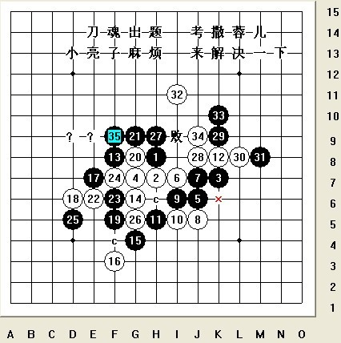
#251 Re:刀魂对局收集 作者：茗弈小刀 发表时间：2009-4-30 9:52:50
晕你！亮解说是我弟弟，这个蓉儿妹妹一看就是女孩。以为都象你练葵花宝典呀。
#252 Re:Re:刀魂对局收集 作者：刀魂 发表时间：2009-4-30 10:00:04
引用：
原文由 茗弈小刀 发表于 2009-4-30 9:52:50 :想死啦，小师姐，我是说过我有 葵花宝典，但是我可没有练撒，，，要是练了，早就不会再继续暗恋你了。。。
#253 Re:刀魂对局收集 作者：撒蓉儿 发表时间：2009-4-30 10:03:27
=======上图对应的爱五子棋谱代码如下，以便你拆解：========
h8h7k7g7j6i7j7j5i6i5h5k8f8g6f5e6e7g8g4f3g9d6f6f7d5g5h9j8k9l8m8i11k10j9f9e9l9j11n7o6m6m7k6
======================================================
#254 Re:刀魂对局收集 作者：撒蓉儿 发表时间：2009-4-30 10:06:30
刀师傅我不是你的亮解说员，是蓉儿昨天看你下棋，看到你的35下错了，忍不住想说就发到这里来了，因为那里我的盘数没有达到10不让说话。
#255 Re:刀魂对局收集 作者：撒蓉儿 发表时间：2009-4-30 10:15:56
=======上图对应的爱五子棋谱代码如下，以便你拆解：========
h8h7k7g7j6i7j7j5i6i5h5k8f8g6f5e6e7g8g4f3g9d6f6f7d5g5h9j8k9l8m8i11k10j9f9e9l9j11n7o6m6m7k6
======================================================这个41是败的哦
#256 Re:Re:刀魂对局收集 作者：刀魂 发表时间：2009-4-30 10:19:39
引用：
原文由 撒蓉儿 发表于 2009-4-30 10:15:56 :
=======上图对应的爱五子棋谱代码如下，以便你拆解：========
h8h7k7g7j6i7j7j5i6i5h5k8f8g6f5e6e7g8g4f3g9d6f6f7d5g5h9j8k9l8m8i11k10j9f9e9l9j11n7o6m6m7k6
======================================================这个41是败的哦知道41败了，还发上来撒。。。其实这个35，没有杀干净的，要想地毯相当困难。。。希望你继续拆拆看看这个黑35到底能不能杀
#257 Re:刀魂对局收集 作者：撒蓉儿 发表时间：2009-4-30 10:31:32
如果我能杀出来会给刀师傅答案，如果杀不出蓉儿认输［ 茗弈小刀 于 2009-4-30 10:40:43 时花20金币送鲜花一朵］
#258 Re:刀魂对局收集 作者：撒蓉儿 发表时间：2009-4-30 10:45:06
谢谢小刀姐姐 ，蓉儿想送你花花不知道怎么送？点哪里？
，蓉儿想送你花花不知道怎么送？点哪里？
#259 Re:刀魂对局收集 作者：茗弈小刀 发表时间：2009-4-30 11:02:34
不用送我妹妹，我的花很多了，谢谢妹妹。你能多来我们论坛，就比送什么都开心了。
#260 Re:刀魂对局收集 作者：撒蓉儿 发表时间：2009-4-30 11:06:36
嗯~蓉儿会常来看姐姐的
#261 Re:Re:刀魂对局收集 作者：刀魂 发表时间：2009-4-30 11:07:25
引用：
原文由 撒蓉儿 发表于 2009-4-30 10:31:32 :
如果我能杀出来会给刀师傅答案，如果杀不出蓉儿认输［ 刀魂 于 2009-4-30 10:40:43 时花999999999金币送鲜花999999999朵］
别告诉我，昨天是你和我下棋啊。。。
#262 Re:刀魂对局收集 作者：刀魂 发表时间：2009-4-30 14:57:30
=======上图对应的爱五子棋谱代码如下，以便你拆解：========
h8h7k7g6i5g8j6h4g7
======================================================
这个9 是正确杀法
［ 茗弈小刀 于 2009-4-30 17:31:52 时花20金币送鲜花一朵］
#263 Re:刀魂对局收集 作者：非鸟 发表时间：2009-4-30 15:10:14
你怎么在格子上打出汉字的呀
#264 Re:Re:刀魂对局收集 作者：刀魂 发表时间：2009-4-30 15:15:59
引用：
原文由 非鸟 发表于 2009-4-30 15:10:14 :
你怎么在格子上打出汉字的呀
［ 刀魂 于 2009-4-30 10:40:43 时花999999999金币送鲜花999999999朵］
你说的是这个吗？
#265 Re:刀魂对局收集 作者：刀学生 发表时间：2009-4-30 15:36:12
刀混无所不能
#266 Re:刀魂对局收集 作者：刀学生 发表时间：2009-4-30 16:43:22
由于棋情刀谱无记载 刀魂碰到未知开局 把自己卖光后 输啦
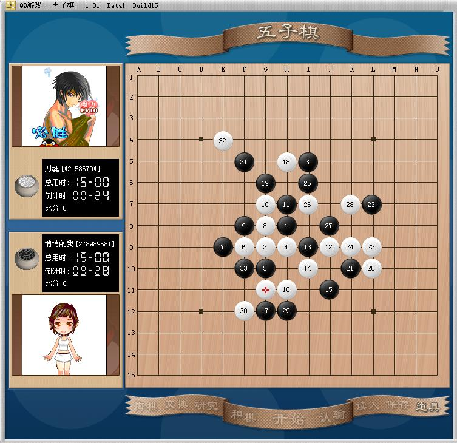［ 茗弈小刀 于 2009-4-30 17:31:04 时花20金币送鲜花一朵］
#267 Re:刀魂对局收集 作者：刀魂 发表时间：2009-4-30 16:46:18
你小样 倒是 挺速度的啊，，，要不你对我开这个刀局，我要是杀不了你，我不叫刀魂。。。
#268 Re:刀魂对局收集 作者：刀学生 发表时间：2009-4-30 16:46:28
10手轻信软件 导致必胜无法下出
=======上图对应的爱五子棋谱代码如下，以便你拆解：========
h8g7i11h7g6f7e7g8f8i6j5i10h9g10g9h10f10i7j7j9
======================================================
此10手 必胜
后面22 后开始卖自己了 乱飘无杀 无连接最后防守也出问题 导致黑必胜
#269 Re:刀魂对局收集 作者：刀学生 发表时间：2009-4-30 16:47:28
刀魂开始自己的经典辩解了 小号能赢我 大号不一定能赢我。别人藐视你才开这个开局哦。这样白必胜的妖刀临场被虐待也能叫刀魂。#270 Re:刀魂对局收集 作者：刀学生 发表时间：2009-4-30 16:52:39
别人又给斜月一打还是必败的第三个弱6 ，是不是藐视你？你再杀不出就可以下课兼带留级了#271 Re:刀魂对局收集 作者：刀魂 发表时间：2009-4-30 16:54:00
，偶就不杀给你看
#272 Re:刀魂对局收集 作者：刀学生 发表时间：2009-4-30 16:55:24
你更本就不会杀 我除了强6都能地毯了 空恨制作呢 哈哈哈哈#273 Re:刀魂对局收集 作者：刀学生 发表时间：2009-4-30 17:01:38
这把别人走到你棋谱上去了 呵呵
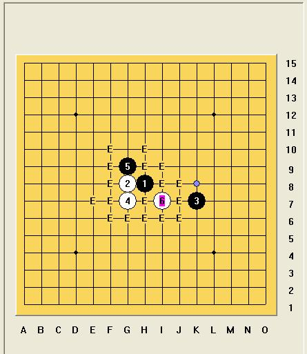#274 Re:刀魂对局收集 作者：刀魂 发表时间：2009-4-30 17:05:24
你有 空恨 次6地毯谱，可不可以 给我看看撒。。。（第一次 求你）
#275 Re:刀魂对局收集 作者：刀学生 发表时间：2009-4-30 17:12:41
棋谱31.7m 呵呵 你自己有自己查证吧
#276 Re:刀魂对局收集 作者：刀魂 发表时间：2009-4-30 17:33:14
不过我也拆了一下子，空恨的次6，没有杀干净的，我重新拆了一下，杀的干干净净
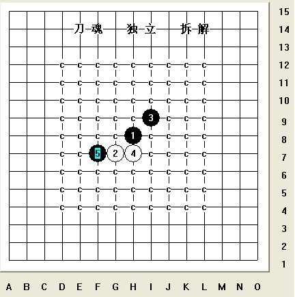
棋谱大小 129M，我拆了1个多月。。。
#277 Re:刀魂对局收集 作者：千羽鹤 发表时间：2009-4-30 17:35:18
刀魂独立拆解
#278 Re:刀魂对局收集 作者：茗弈小刀 发表时间：2009-4-30 17:38:09
刀魂弟弟斜一最强六终结了？那拿出来分享下呀，我给你加威望。
#279 Re:Re:刀魂对局收集 作者：刀魂 发表时间：2009-4-30 17:39:48
引用：
原文由 茗弈小刀 发表于 2009-4-30 17:38:09 :刀魂弟弟斜一最强六终结了？那拿出来分享下呀，我给你加威望。
威望 有毛用啊，想当年 我威望都70啦，，，不稀罕撒，，，
#280 Re:刀魂对局收集 作者：千羽鹤 发表时间：2009-4-30 17:39:53
猛噢
#281 Re:刀魂对局收集 作者：茗弈小刀 发表时间：2009-4-30 17:41:19
 无语。。。。。。。。。。
无语。。。。。。。。。。
#282 Re:Re:刀魂对局收集 作者：岳麓小棋后 发表时间：2009-4-30 17:44:53
引用：
原文由 刀魂 发表于 2009-4-30 17:33:14 :不过我也拆了一下子，空恨的次6，没有杀干净的，我重新拆了一下，杀的干干净净
棋谱大小 129M，我拆了1个多月。。。
斜一其他次6因为有空恨和论坛其他大师的支持，空恨没杀的那些次6我只拆了四天左右就拆干净了；强6还在摸索。
#283 Re:Re:刀魂对局收集 作者：刀魂 发表时间：2009-4-30 17:54:48
引用：
原文由 茗弈小刀 发表于 2009-4-30 17:41:19 :强6 的地毯，是我的 杀手锏，不能乱给人的。。。
#284 Re:刀魂对局收集 作者：茗弈小刀 发表时间：2009-4-30 17:56:49
这个你。懂撒。
#285 Re:Re:刀魂对局收集 作者：刀魂 发表时间：2009-4-30 18:02:39
引用：
原文由 茗弈小刀 发表于 2009-4-30 17:56:49 :小样吧，说为什么 发这么 性感的照片 上来，是不是想泡个 dd 之类的，从实招来
#286 Re:刀魂对局收集 作者：刀学生 发表时间：2009-4-30 18:19:12
全c是不能说明问题的 看到刀魂独立拆解 我就知道 这c是你自己打上去
#287 Re:Re:刀魂对局收集 作者：刀魂 发表时间：2009-4-30 18:30:43
引用：
原文由 刀学生 发表于 2009-4-30 18:19:12 :全c是不能说明问题的 看到刀魂独立拆解 我就知道 这c是你自己
不管 你说什么，我都不会 把 谱 给你的，给小刀，我会考虑一下子的。。。
#288 Re:刀魂对局收集 作者：刀学生 发表时间：2009-4-30 18:39:49
你谁都不回给 因为你没有 哈哈哈哈#289 Re:刀魂对局收集 作者：流逝 发表时间：2009-4-30 20:09:15
 我一直想发一个1手开始就全是c的图 但是我还不知道在这里怎么发图
我一直想发一个1手开始就全是c的图 但是我还不知道在这里怎么发图
#290 Re:刀魂对局收集 作者：逆刃 发表时间：2009-4-30 20:18:56
只要把图片做附件上传上来就可以了！#291 Re:刀魂对局收集 作者：忧郁的双眼 发表时间：2009-4-30 20:29:49
这种放卫星就太过了。。
都有种拿板砖跑天津拍你的冲动了~~
#292 Re:Re:刀魂对局收集 作者：刀魂 发表时间：2009-4-30 20:33:40
引用：
原文由 忧郁的双眼 发表于 2009-4-30 20:29:49 :这种放卫星就太过了。。
都有种拿板砖跑天津拍你的冲动了~~
#293 Re:刀魂对局收集 作者：刀学生 发表时间：2009-4-30 20:34:58
刀混 不要装X会死啊！#294 Re:刀魂对局收集 作者：刀魂 发表时间：2009-4-30 20:37:24
如果我真有 斜月完全地毯谱，你说怎么办呢？？？
#295 Re:刀魂对局收集 作者：刀学生 发表时间：2009-4-30 20:42:52
自己YYBA
#296 Re:刀魂对局收集 作者：刀魂 发表时间：2009-4-30 20:57:55
#297 Re:刀魂对局收集 作者：刀学生 发表时间：2009-4-30 21:03:38
建议封杀刀混。
#298 Re:刀魂对局收集 作者：刀魂 发表时间：2009-4-30 21:04:48
，做人要厚道撒（请用河南话 读）
#299 Re:刀魂对局收集 作者：刀学生 发表时间：2009-4-30 21:05:52
刀混就是河南佬
#300 Re:刀魂对局收集 作者：刀魂 发表时间：2009-4-30 21:07:23
，你才发现呀，真是笨蛋一个。。。狂吐血
#301 Re:刀魂对局收集 作者：刀学生 发表时间：2009-4-30 21:10:29
流逝和你说话，你说你江西的，又装X了是不
#302 Re:刀魂对局收集 作者：刀魂 发表时间：2009-4-30 21:12:07
，流逝是哪个 啊？？？
#303 Re:刀魂对局收集 作者：刀学生 发表时间：2009-4-30 21:14:16
你玩棋都快玩的要六亲不认了#304 Re:刀魂对局收集 作者：刀魂 发表时间：2009-4-30 21:15:58
流逝？？？ 有很多叫流逝的啊，我怎么知道你说的哪个 流逝啊？？？
#305 Re:刀魂对局收集 作者：刀魂 发表时间：2009-4-30 21:49:51
=======上图对应的爱五子棋谱代码如下，以便你拆解：========
h8g7f6h6i5g9g8i8e7g5i7d8
======================================================
后面谁来继续 走。。。看看结果如何
#306 Re:刀魂对局收集 作者：刀魂 发表时间：2009-5-1 12:00:59
=======上图对应的爱五子棋谱代码如下，以便你拆解：========
h8h9j10i9i8g9j9j8f7f5
======================================================
这个局面如何。。。
#307 Re:刀魂对局收集 作者：刀学生 发表时间：2009-5-1 13:04:25
建议封杀刀混 ，
#308 Re:刀魂对局收集 作者：刀魂 发表时间：2009-5-1 17:40:21
，做人要厚道撒（请用河南话说）
#309 Re:Re:刀魂对局收集 作者：方圆之外 发表时间：2009-5-1 20:49:38
引用：
原文由 流逝 发表于 2009-4-30 20:09:15 :流大士。。。你太有才了``
#310 Re:刀魂对局收集 作者：刀魂 发表时间：2009-5-1 22:17:34
#311 Re:刀魂对局收集 作者：灯塔连珠 发表时间：2009-5-2 9:32:09
这个帖子不顶，真不行~~~~~#312 Re:刀魂对局收集 作者：刀魂 发表时间：2009-5-2 9:49:18
。。。做人要厚道。。。
#313 Re:刀魂对局收集 作者：刀魂 发表时间：2009-5-2 14:15:42
=======上图对应的爱五子棋谱代码如下，以便你拆解：========
h8h9h6i10i6i9g9g8j11i7i8k7j8j9k6j6l8k8l7l9k9j10h11k11
======================================================
这个 24 ，谁来小拆一下
#314 Re:Re:刀魂对局收集（请不要过度炫耀，扰乱论坛） 作者：lfzxdh 发表时间：2009-5-2 21:29:10
引用：这话讲的...
原文由 刀魂 发表于 2009-3-31 8:03:20 :
对，虽然是我赢的，但是高手，他们都不舍的用好的谱和我下啊，

#315 Re:Re:Re:刀魂对局收集（请不要过度炫耀，扰乱论坛） 作者：刀魂 发表时间：2009-5-2 21:35:38
引用：
原文由 lfzxdh 发表于 2009-5-2 21:29:10 :引用：
原文由 刀魂 发表于 2009-3-31 8:03:20 :
对，虽然是我赢的，但是高手，他们都不舍的用好的谱和我下啊，这话讲的...
#316 Re:刀魂对局收集 作者：刀魂 发表时间：2009-5-3 13:42:18
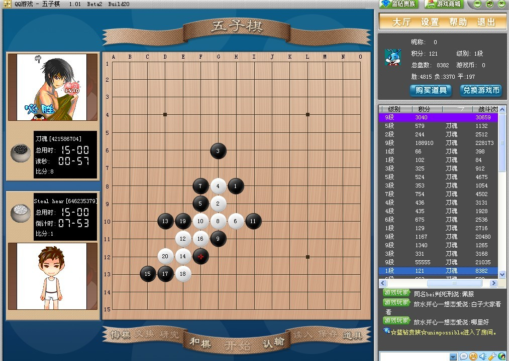
这局，我杀的很无奈啊，对方估计用的是黑石，差点被他虐s，还好我连续走出唯一防，连续控制住局面，最后在外围杀之（不过中途我有悔棋
的）
#317 Re:刀魂对局收集 作者：wd1988 发表时间：2009-5-3 13:56:01
哈哈！控制。。。别人用黑石，好像你没用似的，搞笑#318 Re:刀魂对局收集 作者：茗弈小刀 发表时间：2009-5-3 14:00:26
#319 Re:刀魂对局收集 作者：刀学生 发表时间：2009-5-3 14:25:03
这种前盘的防也能叫作控制？ 刀混只会控制，第一盘好像名月执黑不会杀 乱攻把自己卖掉了。#320 Re:刀魂对局收集 作者：游戏人间 发表时间：2009-5-3 15:29:16
岚月啊。。。早都地毯的了。。。还差点没杀掉。。。佩服#321 Re:刀魂对局收集 作者：刀魂 发表时间：2009-5-3 16:09:56
别 一个个 就知道在这里 说我，有种你来和我下岚月，30秒，秒了你。。。（别以为我没有地毯。。。）一个个就知道背后说人
话。。。嘻嘻哈哈，你干嘛又来笑我，今天你大号开到三手，干嘛不和我下，怎么，怕输还是。。。一个个都tmd 装b，鄙视之。。。来
啊，come on。。。
#322 Re:Re:刀魂对局收集 作者：刀魂 发表时间：2009-5-3 16:11:08
引用：
原文由 wd1988 发表于 2009-5-3 13:56:01 :
哈哈！控制。。。别人用黑石，好像你没用似的，搞笑告诉你，我今天，就是没用，怎么地了。。。。
#323 Re:刀魂对局收集 作者：岳麓小棋后 发表时间：2009-5-3 16:19:44
论坛第一猛帖，争取赶超站务管理那个申请威望的超级帖
这里有精彩棋谱
有大师调侃
有刀魂式专版
有泼妇骂街
有。。。。。
总之一句话：
集中国五子棋之大成！
中村看了佩服
安度看了点头
#324 Re:刀魂对局收集 作者：游戏人间 发表时间：2009-5-3 16:35:05
我这个月会去天津。。希望你能逼和我一盘。。既然今天都没开黑石了。说明你很强大的。希望让我眼前一亮。#325 Re:Re:刀魂对局收集 作者：刀魂 发表时间：2009-5-3 17:20:42
引用：
原文由 游戏人间 发表于 2009-5-3 16:35:05 :
我这个月会去天津。。希望你能逼和我一盘。。既然今天都没开黑石了。说明你很强大的。希望让我眼前一亮。
#326 Re:Re:刀魂对局收集 作者：刀魂 发表时间：2009-5-3 17:24:23
引用：
原文由 岳麓小棋后 发表于 2009-5-3 16:19:44 :论坛第一猛帖，争取赶超站务管理那个申请威望的超级帖
这里有精彩棋谱
有大师调侃
有刀魂式专版
有泼妇骂街
有。。。。。
总之一句话：
集中国五子棋之大成！
中村看了佩服
安度看了点头
泼妇骂街。。。这个好像没有吧，，，难道 tmd算骂街。。。今天花影姐姐和我聊天还自称 老子 了呢。。。只不过算口头禅罢了
#327 Re:刀魂对局收集 作者：小红眼镜 发表时间：2009-5-3 17:31:14
路过....
#328 Re:刀魂对局收集 作者：学生刀 发表时间：2009-5-3 18:08:42
大鱼去了天津，刀混第一反应时躲起来再说
#329 Re:刀魂对局收集 作者：学生刀 发表时间：2009-5-3 18:12:54
除了小棋后 这里只有刀魂一个女人了
#330 Re:Re:刀魂对局收集 作者：刀魂 发表时间：2009-5-3 19:03:24
引用：
原文由 学生刀 发表于 2009-5-3 18:12:54 :
除了小棋后 这里只有刀魂一个女人了
#331 Re:刀魂对局收集 作者：学生刀 发表时间：2009-5-3 19:11:13
你是阴阳人
#332 Re:Re:刀魂对局收集 作者：刀魂 发表时间：2009-5-3 19:12:19
引用：
原文由 学生刀 发表于 2009-5-3 19:11:13 :你是阴阳人
亲爱的，我是 传说中的 男女通吃的“人妖”
#333 Re:Re:Re:刀魂对局收集 作者：老黄 发表时间：2009-5-3 20:26:30
引用：
原文由 刀魂 发表于 2009-5-3 17:20:42 :引用：
原文由 游戏人间 发表于 2009-5-3 16:35:05 :
我这个月会去天津。。希望你能逼和我一盘。。既然今天都没开黑石了。说明你很强大的。希望让我眼前一亮。
刀魂大师傻眼了吧，不是天天吵着要砍高手吗，高手现在都
#334 Re:刀魂对局收集 作者：wd1988 发表时间：2009-5-3 20:57:45
刀魂说：“什么？大鱼要去天津？什么？什么？什么？。。。。我没听见，我有事，先走了”#335 Re:刀魂对局收集 作者：暮雨迟 发表时间：2009-5-3 21:12:03
期待刀鱼的对局早点问世咧
#336 Re:刀魂对局收集 作者：岳麓小棋后 发表时间：2009-5-3 21:30:40
秋刀鱼的味道蛮8错
#337 Re:刀魂对局收集 作者：刀魂 发表时间：2009-5-3 22:11:58
做人 厚道撒。。。
#338 Re:刀魂对局收集 作者：刀魂 发表时间：2009-5-4 10:30:13
=======上图对应的爱五子棋谱代码如下，以便你拆解：========
h8h7k7i7
======================================================
这个4 超级变态。。。
#339 Re:刀魂对局收集 作者：刀魂 发表时间：2009-5-4 11:03:41
=======上图对应的爱五子棋谱代码如下，以便你拆解：========
h8g7f6h6i5g9g8f8
======================================================
这个8 也很恶心。。。
#340 Re:刀魂对局收集 作者：刀魂 发表时间：2009-5-4 12:23:59
=======上图对应的爱五子棋谱代码如下，以便你拆解：========
h8h7h10i6i10i7g7g8j5i9i8k9j8j7k10j10l8k8l9l7k7j6h5i3g5k5j11i12
======================================================
=======上图对应的爱五子棋谱代码如下，以便你拆解：========
h8h7h10i6i10i7g7g8j5i9i8k9j8j7k10j10l8k8l9l7k7j6h5i3g5k5i4
======================================================
其实 第二谱的27要比第一谱好。。。个人觉得那个3不应该走，到了中盘，黑棋有很大优势，不知道大家有没有试过。。。
#341 Re:刀魂对局收集 作者：刀魂 发表时间：2009-5-20 3:41:06
三手相互学习对局
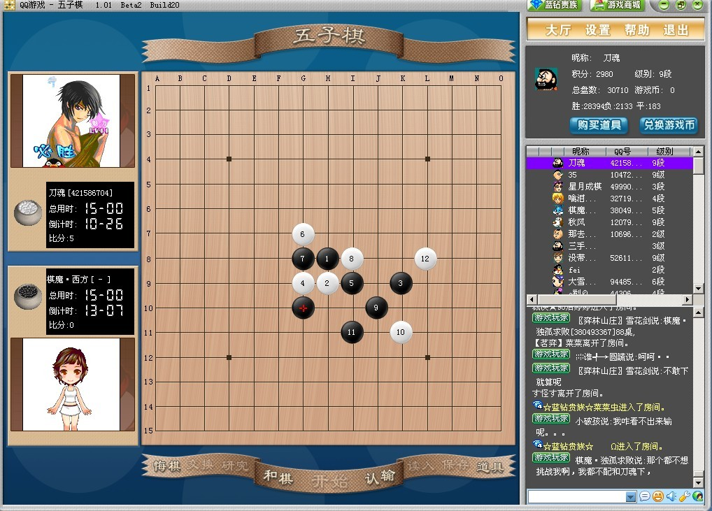#342 Re:刀魂对局收集 作者：刀魂 发表时间：2009-5-20 3:42:57
三手互相学习对局
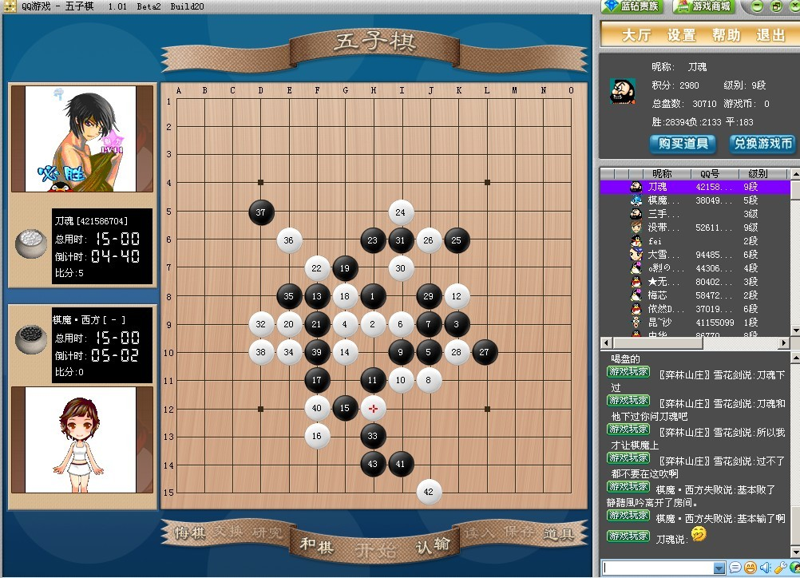
#343 Re:刀魂对局收集 作者：gerbo 发表时间：2009-5-20 7:49:23
请加上点说明..这样看起来就比较舒服了..
#344 Re:刀魂对局收集 作者：解放者 发表时间：2009-5-20 10:14:33
怎么星月社还有人啊？怕早不是当年那个以星月无语，沉默为核心的星月社了吧。#345 Re:刀魂对局收集 作者：没事摆石子玩 发表时间：2009-5-20 12:32:53
星月为什么没有人？你谁呀？星月社关你啥事？#346 Re:刀魂对局收集 作者：解放者 发表时间：2009-5-20 13:07:20
我是说现在的星月好象没有以前那些人了。
酷猫，沉默，无语这几个想必你们都不认识吧。
#347 Re:刀魂对局收集 作者：没事摆石子玩 发表时间：2009-5-20 13:35:20
很遗憾无语是认识的。你很老江湖所？游戏叫什么名字？#348 Re:刀魂对局收集 作者：坏蛋色色色 发表时间：2009-5-21 0:19:30
哇 帖子 到满的 么 。。。 小刀魂啊 坏蛋哥来了 还不请安啊 要你干什么的啊。。在警告你小子下 以后别叫我小。。。 在叫就虐你小子 ~不常来。。今天帮你小子顶下、、
#349 Re:刀魂对局收集 作者：刀魂 发表时间：2009-5-21 5:56:16
小蛋蛋。。。
#350 Re:刀魂对局收集 作者：坏蛋色色色 发表时间：2009-5-21 16:52:52
好列 你倒霉列。。真把我给弄火了 你完了 我要狂喷你 擦
#351 Re:刀魂对局收集 作者：刀魂 发表时间：2009-5-21 22:38:50
小蛋蛋
#352 Re:刀魂对局收集 作者：刀魂 发表时间：2009-5-22 10:24:27
出来冒个泡
=======上图对应的爱五子棋谱代码如下，以便你拆解：========
h8h9h6i10i6i9g9g8j11i7i8k7j8j9k6j6l8k8l7l9k9j10g12
======================================================
这个23，发现黑棋到了中盘很被动，白24手是关键，不然白棋很被动的
#353 Re:刀魂对局收集 作者：刀魂 发表时间：2009-5-27 13:15:48
灌个水
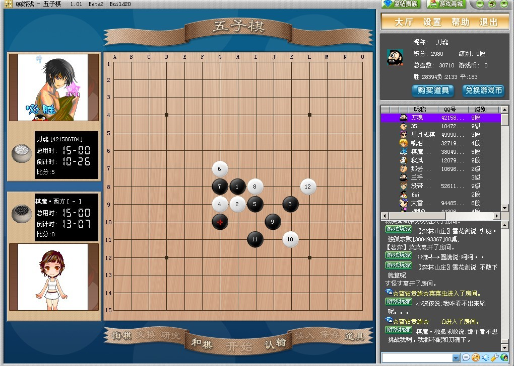
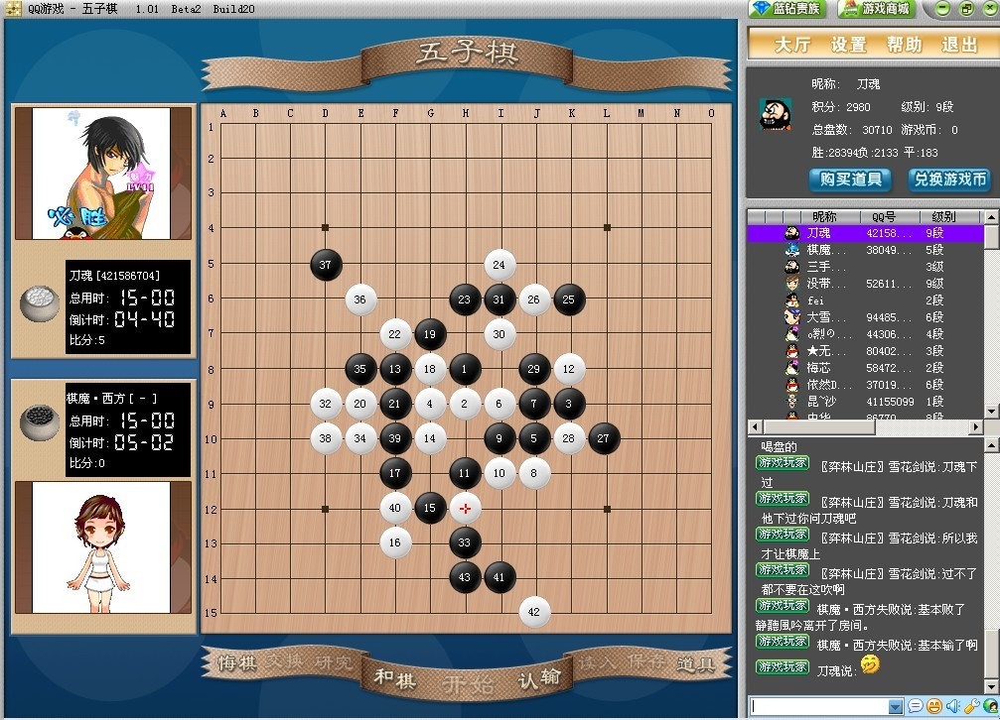
#354 Re:刀魂对局收集 作者：英雄九段 发表时间：2009-5-27 16:45:06
怎么不直接发送棋谱啊
#355 Re:刀魂对局收集 作者：刀魂 发表时间：2009-5-27 16:54:30
不是 发了嘛 ，图片 上 表明了啊。。。
#356 Re:刀魂对局收集 作者：刀魂 发表时间：2009-5-30 10:30:01
刀魂新马甲：【紫雲轩】 金陵遗少[644594517]
#357 Re:刀魂对局收集 作者：刀魂 发表时间：2009-5-31 9:34:38
这个图片显示不出来，是不是程序出错了
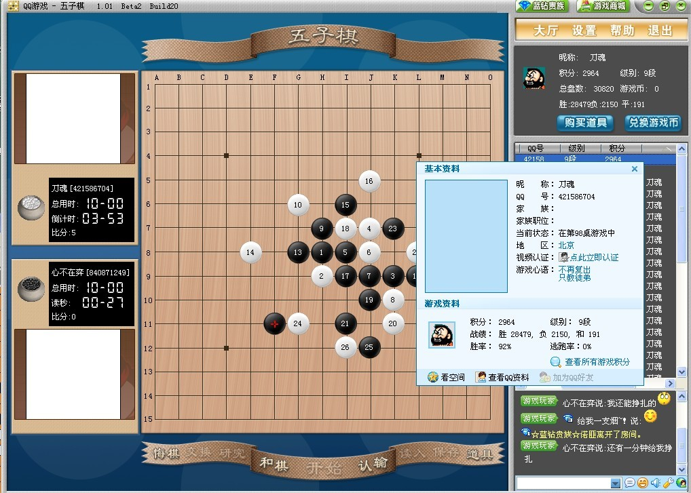
#358 Re:刀魂对局收集 作者：刀魂 发表时间：2009-6-1 9:49:37
弱弱的问句“是不是中病毒了，还是？”
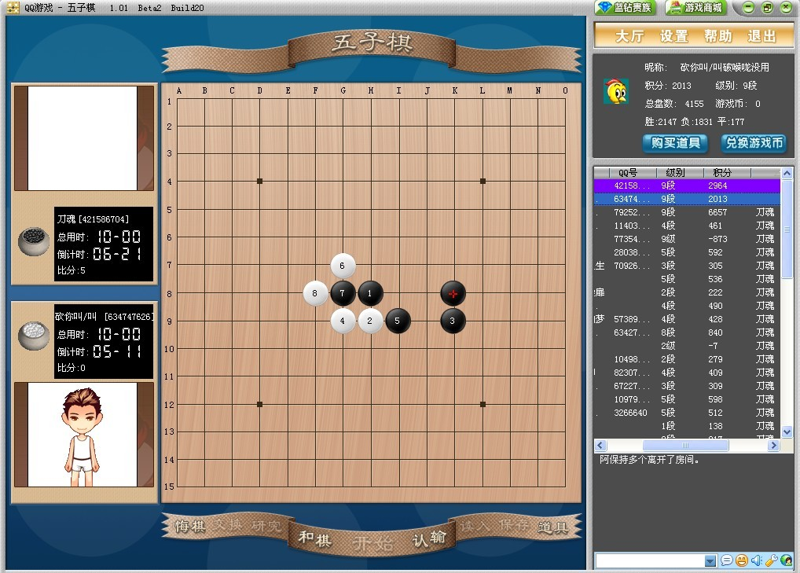
#359 Re:刀魂对局收集 作者：不知 发表时间：2009-6-1 10:51:39
 是你自己看不见图片..我全部都能看见..
是你自己看不见图片..我全部都能看见..
#360 Re:刀魂对局收集 作者：wd1988 发表时间：2009-6-1 12:38:14
系统认为你见不得人#361 Re:Re:刀魂对局收集 作者：刀魂 发表时间：2009-6-1 15:55:02
引用：
原文由 wd1988 发表于 2009-6-1 12:38:14 :
系统认为你见不得人嘻嘻哈哈，你别嚣张，你有种就把你 大号开出来，和我砍8局。。。其他的不想多说
#362 Re:刀魂对局收集 作者：gerbo 发表时间：2009-6-1 16:22:02
356L的名字起的太强大了~~
#363 Re:刀魂对局收集 作者：wd1988 发表时间：2009-6-1 18:35:56
狮子不和老鼠打架#364 Re:Re:刀魂对局收集 作者：刀魂 发表时间：2009-6-1 18:37:40
引用：
原文由 wd1988 发表于 2009-6-1 18:35:56 :
狮子不和老鼠打架别装b ，老子最鄙视装b之人，嘻嘻哈哈，你的谱基本上都是我小师傅的，你什么水平他跟我说了，我随时等你。。。别只知道在论
坛里看不起这个看不起那个的。。。上次qq家族比赛，去都不敢去，竟然推给猛龙过江，怎么怕输不起，既然怕输不起，就少tmd在
这里嚣张。。。我还是那句话，随时在三手等你，我只要你的大号。。。
#365 Re:刀魂对局收集 作者：刀魂 发表时间：2009-6-1 23:17:28
=======上图对应的爱五子棋谱代码如下，以便你拆解：========
h8h7k7i7
======================================================
残月刀这个4 比较麻烦
=======上图对应的爱五子棋谱代码如下，以便你拆解：========
h8h7k7j9
======================================================
这个4也恶心
=======上图对应的爱五子棋谱代码如下，以便你拆解：========
h8h7k7j8
======================================================
这个4也不赖哟
残月刀很多2打都没有杀干净的，有点像斜月1打，个人觉得很难杀的干净
#366 Re:刀魂对局收集 作者：lfc 发表时间：2009-6-2 8:18:55
刀魂又在嚣张了，我在三手等你的时候你怎么不出现，不要这样了都知道你是什么人了。我连手机号，地址都说了，你还是不敢来，最后的条件这么优厚，包你路费，呵呵呵！送钱你都不敢，什么人啊！我是你早就消失算了！还有脸面！#367 Re:Re:刀魂对局收集 作者：刀魂 发表时间：2009-6-2 8:23:49
引用：
原文由 lfc 发表于 2009-6-2 8:18:55 :
刀魂又在嚣张了，我在三手等你的时候你怎么不出现，不要这样了都知道你是什么人了。我连手机号，地址都说了，你还是不敢来，最后的条件这么优厚，包你路费，呵呵呵！送钱你都不敢，什么人啊！我是你早就消失算了！还有脸面！是吗？？？我告诉你。。。我不杀你这个 无名小卒；因为你不配和我过招。。。
#368 Re:刀魂对局收集 作者：lfc 发表时间：2009-6-2 8:33:36
还有很多人都问我你是不是空恨，你还在你的介绍里面说自己是空恨，可笑！我很想研究你的心理真的很有问题，再这么演变下去你可能失去了在现实中生存的能力。你应该检讨自己，当身边的人都在针对你的时候，你是不是该反省自己一下呢？还有猛龙我上次问过他认不认识刀魂这个人，他告诉我：“刀魂是谁”我想你是不是喜欢一个人扮作很多人来玩，或许你身边的朋友，师傅，徒弟都只是你自己，如果是这样建议马上停止这个游戏，就近或者找一个好一点的医院去看看，我可以很负责的告诉你，你的精神出现了问题真的！如果害怕，你可以电话通知你父母，告诉他们你现在的状况，最好在父母的陪同下就诊！
#369 Re:刀魂对局收集 作者：lfc 发表时间：2009-6-2 8:43:56
呵呵！无名也罢有名也罢那都是过去的事情，曾经我也跟你一样嚣张，我离开游戏前踢了所有家族，现在你还可以在QQ论坛找到我跟几个棋手挑战几个家族的文章，其中牵扯到很多家族，这里就不好说。我为我年轻无知道歉！苏系在蝶老大跟阿宝时代，我就是两年的总考官，跟你现在“金陵遗少”那个号的官一样，呵呵！可笑！ 有点怀念那个没有软件，加棋谱的时代。
#370 Re:刀魂对局收集 作者：刀魂 发表时间：2009-6-2 8:45:51
ls 的sb 我从来没说我是空恨。。。我只说我是 邪空恨 ，，，真tmd 2 你
我现在就在三手等你。。。sb 放马过来
#371 Re:Re:刀魂对局收集 作者：刀魂 发表时间：2009-6-2 8:53:21
引用：
原文由 lfc 发表于 2009-6-2 8:33:36 :还有很多人都问我你是不是空恨，你还在你的介绍里面说自己是空恨，可笑！我很想研究你的心理真的很有问题，再这么演变下去你可能失去了在现实中生存的能力。你应该检讨自己，当身边的人都在针对你的时候，你是不是该反省自己一下呢？还有猛龙我上次问过他认不认识刀魂这个人，他告诉我：“刀魂是谁”我想你是不是喜欢一个人扮作很多人来玩，或许你身边的朋友，师傅，徒弟都只是你自己，如果是这样建议马上停止这个游戏，就近或者找一个好一点的医院去看看，我可以很负责的告诉你，你的精神出现了问题真的！如果害怕，你可以电话通知你父母，告诉他们你现在的状况，最好在父母的陪同下就诊！
sb 一个。。。猛龙过江要是那样回答的话。。。那就真tmd 2b 一个。。。告诉你我叫 猛龙师傅。。。你真tmd sb 一个。。。对你
彻底无语
#372 Re:Re:刀魂对局收集 作者：longfx 发表时间：2009-6-2 9:04:09
引用：...没事别说起我...好了
原文由 lfc 发表于 2009-6-2 8:43:56 :
呵呵！无名也罢有名也罢那都是过去的事情，曾经我也跟你一样嚣张，我离开游戏前踢了所有家族，现在你还可以在QQ论坛找到我跟几个棋手挑战几个家族的文章，其中牵扯到很多家族，这里就不好说。我为我年轻无知道歉！苏系在蝶老大跟阿宝时代，我就是两年的总考官，跟你现在“金陵遗少”那个号的官一样，呵呵！可笑！
#373 Re:刀魂对局收集 作者：刀魂 发表时间：2009-6-2 9:04:29
一下 可能是 lfc 的对话：
偶尔来下棋说:怎么不来
偶尔来下棋说:你当做我要砍你好了
【明教】刀魂说:开斜 是很不li貌 的
偶尔来下棋说:呵呵！你不懂
【明教】刀魂说:你来试一试
偶尔来下棋说:看来你不敢
【明教】刀魂说:你是 论坛的 lfc ？？？
【欢乐斗地主】神秘万人大场，顶尖高手较量！公平的游戏模式，高效的速配撮合！新版新体验，欢乐看得见！点击进入查看详情>>>
视频斗地主美女房主搜集活动上线，截房主靓照，赢魅力大奖！赶快来参加>>>
【欢乐斗地主】五月端阳粽飘香，雄黄木杖毒蛇降~欢乐斗地主端午任务发布，小桃MM送元宝咯！查看活动详情>>>
☆蓝钻贵族☆【邪】紫金进入了房间。
【金】乾坤进入了房间。
☆蓝钻贵族☆【邪】紫金离开了房间。
龌龊进入了房间。
偶尔来下棋说:呵呵！
小样进入了房间。
【明教】刀魂说:是不是 说句话
偶尔来下棋说:你软件算的很慢
【明教】刀魂说:是的话。我和你好好下
偶尔来下棋说:呵呵！靠你的软件来跟我下棋
偶尔来下棋说:来吧
龌龊说:????
偶尔来下棋说:我很久没跟黑石玩了
龌龊说:大家好
【明教】刀魂说:前面都是 定式
偶尔来下棋说:那就下
【明教】刀魂说:我要是 用软的话
【明教】刀魂说:怎么会慢呢
【明教】刀魂说:你也不想一想
偶尔来下棋说:我只能说你连两打都不知道
偶尔来下棋说:下吧
【明教】刀魂说:你别tmd 少废话
【明教】刀魂说:你是不是 论坛的lfc
偶尔来下棋说:呵呵！
【明教】刀魂说:不是的话。
【明教】刀魂说:让一下
【明教】刀魂说:我等他
偶尔来下棋说:你就当我是
【明教】刀魂说:男人点
【明教】刀魂说:我要你一句话
偶尔来下棋说:来吧
【明教】刀魂说:是不是
偶尔来下棋说:不下把你就认输滚蛋
偶尔来下棋说:以后别在这里装
【明教】刀魂说:告诉你。。。你说你是 lfc的话
【明教】刀魂说:我今天就给你面子 和你砍
偶尔来下棋说:你是不敢吧
偶尔来下棋说:我不需要你给面子
【蓝钻每月特权】：10多个宝箱免费开；记牌器免费用；价值80Q币找茬道具免费用；玫瑰免费送；最多几十万欢乐豆加成！立即成为蓝钻>>
菏泽06进入了房间。
#374 Re:刀魂对局收集 作者：lfc 发表时间：2009-6-2 9:11:40
刀魂大师陷入长考！一个流星的局面难住了大师！大师的白子怎么还不下啊！呵呵！
#375 Re:刀魂对局收集 作者：lfc 发表时间：2009-6-2 9:19:05
大师的优势失去了！谁会抓图啊！来抓一下啊！不然大师的软件棋要耍赖了！
#376 Re:刀魂对局收集 作者：lfc 发表时间：2009-6-2 9:23:15
刀魂大师32手错了！陷入被动！
#377 Re:刀魂对局收集 作者：lfc 发表时间：2009-6-2 9:27:30
各位高手，这里我登出我跟大师的一局！=======上图对应的爱五子棋谱代码如下，以便你拆解：========
h8g7f10i7f8h7f7f9g8i8i10h9j7g6f5g5h6g9i9e8g10j9k10f6e7c6d7g4g3c7c8e10k11
======================================================
#378 Re:刀魂对局收集 作者：刀魂 发表时间：2009-6-2 9:28:25
让大家看看 lfc是个什么样的人：（注：偶尔来下棋=lfc）
小鱼进入了房间。
Sea进入了房间。
偶尔来下棋说:给刀魂大师加油
偶尔来下棋说: 大师我最喜欢你的棋了！
偶尔来下棋说:跟黑石一个样子！好强大啊
﹎小 嘟 嘟﹎说:下就下哪这么多话
﹎小 嘟 嘟﹎说:真吵人
孤岛独君进入了房间。
【QQ等级加速中】您今天已经玩了26分钟，再多玩3分钟就可以为您的QQ等级加速0.3天！
偶尔来下棋说:呵呵！
偶尔来下棋说:这就就是你在论坛吹嘘的棋
偶尔来下棋说:呵呵！
偶尔来下棋说:三年前砍我一局就是苏系的长老
偶尔来下棋说:呵呵！你还差很多
﹎小 嘟 嘟﹎说:墨迹，真tmd 垃圾一个。。。废话那么
偶尔来下棋说:让我失望
偶尔来下棋说:你的棋跟你的口气一样就好
偶尔来下棋说:（弱人一个）
偶尔来下棋说:垃圾一个！
#379 Re:刀魂对局收集 作者：lfc 发表时间：2009-6-2 9:34:15
一不小心就砍了大师。大师可能对于流星不是很了解！大师的控制，中盘，外围做杀，都用不上了！我感觉不精彩甚至有点简单，是不是大师的棋就是这样呢？不过我们听下大师是如何评论这盘棋的！当然大师的见解独到，可能会不承认这棋是大师所下，应该是师母或者小师妹啊更或者是徒弟啊！反正刀魂这个名字很臭，很多！我跟刀魂大师下了棋吗？？没有，一定没有！刀魂大师是必胜的连珠第一牛人啊！！！！
#380 Re:Re:刀魂对局收集 作者：刀魂 发表时间：2009-6-2 9:36:14
引用：
原文由 lfc 发表于 2009-6-2 9:34:15 :
一不小心就砍了大师。大师可能对于流星不是很了解！大师的控制，中盘，外围做杀，都用不上了！我感觉不精彩甚至有点简单，是不是大师的棋就是这样呢？不过我们听下大师是如何评论这盘棋的！当然大师的见解独到，可能会不承认这棋是大师所下，应该是师母或者小师妹啊更或者是徒弟啊！反正刀魂这个名字很臭，很多！我跟刀魂大师下了棋吗？？没有，一定没有！对你无语。。。砍完一局就跑。。。
#381 Re:刀魂对局收集 作者：lfc 发表时间：2009-6-2 9:41:56
刀魂加了很多语言啊！呵呵！我是什么人无需你说，是不是我说的话我也不辩解！没意思！很没意思！我还是很崇拜大师的，屡败屡战，在挫折中成长进步，在骂声中得到锻炼。在被无名小子砍当中依然坚持大师的妄想，让我们一起祝愿大师能成为真正的大师而不是“师母”#382 Re:刀魂对局收集 作者：刀魂 发表时间：2009-6-2 9:45:40
对你 彻底无语。。。#383 Re:刀魂对局收集 作者：刀魂 发表时间：2009-6-6 22:09:20
=======上图对应的爱五子棋谱代码如下，以便你拆解：========
h8h7k7i7g7i9i8g8f9
======================================================
小考：白如何杀？？？
#384 Re:刀魂对局收集 作者：安娜制作所 发表时间：2009-6-8 16:52:50
答18楼的一路=======上图对应的爱五子棋谱代码如下，以便你拆解：========
h8h9j10i9j9j8h10g10i8k10g6g9f9g8g7f7e6h13j11g12g11f11e10e12d13f12h12f13f10i13g13i11i14e14h11g14d11f14
======================================================
［ 刀魂 于 2009-6-8 17:24:40 时花20金币送鲜花一朵］
#385 Re:刀魂对局收集 作者：解放者 发表时间：2009-6-8 18:00:05
呵呵，383楼应该是问：黑棋放水下白怎么杀吧。
#386 Re:刀魂对局收集 作者：刀魂 发表时间：2009-6-8 22:05:04
,没有 防水
#387 Re:刀魂对局收集 作者：刀魂 发表时间：2009-6-9 11:12:55
=======上图对应的爱五子棋谱代码如下，以便你拆解：========
h8h9h6i10i6i9g9g8j11i7g6
======================================================
小考：如何 地毯了这个弱11
#388 Re:刀魂对局收集 作者：刀魂 发表时间：2009-6-11 12:54:09
=======上图对应的爱五子棋谱代码如下，以便你拆解：========
h8h7h10i6i10i7g7g8j5i9i8k9j8j7k10j10l8k8l9l7k7j6h5i3k5g5j11i12i4l5l11h6g6j3l6h4j2g3f3e5f4f7
======================================================
#389 Re:刀魂对局收集 作者：刀魂 发表时间：2009-6-12 18:49:02
=======上图对应的爱五子棋谱代码如下，以便你拆解：========
h8h7k7i7
======================================================
小考：如何杀这个白4
#390 Re:刀魂对局收集 作者：刀魂 发表时间：2009-6-15 12:02:47
=======上图对应的爱五子棋谱代码如下，以便你拆解：========
h8h9k9i9f9
======================================================
其实这个5，个人觉得是最好的，中盘之后，黑棋优势巨大
#391 Re:刀魂对局收集 作者：茗弈小刀 发表时间：2009-6-15 12:33:36
刀魂现在感觉比较沉稳些了，我在考虑什么时候还是和你下2盘吧，估计我下不过你的。#392 Re:刀魂对局收集 作者：wrwak 发表时间：2009-6-15 13:27:30
刀魂的帖子远超网站的报道帖。
#393 Re:刀魂对局收集 作者：刀魂 发表时间：2009-6-15 16:18:41
=======上图对应的爱五子棋谱代码如下，以便你拆解：========
h8h7h10g6g10g7i7i8f5f10
======================================================
这个 10 小有意思。。。要全地毯还真得拆一下子，呵呵，昨天刚把它地毯啦
［ 茗弈小刀 于 2009-6-15 17:49:44 时花20金币送鲜花一朵］
#394 Re:刀魂对局收集 作者：wrwak 发表时间：2009-6-15 19:50:23
这个10我研究过，白棋的确有个棋谱上没有的强防。现在看来也不算难杀，当时参考‘迷’的总谱上面没有这里的讲解。
=======上图对应的爱五子棋谱代码如下，以便你拆解：========
h8i9h6h9i6i10g9g8j11j6i11f10h10f8f7j9
======================================================
#395 Re:刀魂对局收集 作者：刀魂 发表时间：2009-6-17 17:51:19
=======上图对应的爱五子棋谱代码如下，以便你拆解：========
h8h7h10g6g10g7i7i8f5g9g8i10e6d7
======================================================
这个 14 蛮有意思，下午拆解了一下，黑全盘虐白，部分已经地毯，有几个 强防，不确定
#396 Re:刀魂对局收集 作者：小红眼镜 发表时间：2009-6-18 1:27:14
刀魂大师。。请问您前些天发的妖刀谱的解压密码是啥啊。。-_-
#397 Re:刀魂对局收集 作者：wrwak 发表时间：2009-6-18 8:02:53
刀魂耍人的，刀魂总谱留着自己意淫，不可能的发的。
#398 Re:刀魂对局收集 作者：刀魂 发表时间：2009-6-18 8:48:22
 ，好像不需要什么密码的吧，都不知道被谁删了。。。
，好像不需要什么密码的吧，都不知道被谁删了。。。
#399 Re:刀魂对局收集 作者：小红眼镜 发表时间：2009-6-18 9:22:42
真要密码。。。。我在临删前侥幸下下来了。。结果。。。提示解压要密码。。
#400 Re:刀魂对局收集 作者：刀魂 发表时间：2009-6-18 9:43:42
。。。那我就不清楚了，你加我q号得了。
#401 Re:刀魂对局收集 作者：小红眼镜 发表时间：2009-6-18 10:03:05
大师QQ是啥啊。。
#402 Re:刀魂对局收集 作者：啊吖阿呵 发表时间：2009-6-18 11:03:57
刀魂大师，前几天那刀谱下了没解压，今天解压却要密码的，密码是啥啊，短讯发个密码来啊
#403 Re:刀魂对局收集 作者：wrwak 发表时间：2009-6-18 13:05:43
居然还有人相信刀魂真的没设密码，刀魂不会告诉你们密码的，就算告诉，也要先收成徒弟再说。
#404 Re:刀魂对局收集 作者：刀魂 发表时间：2009-6-18 16:34:43
真的不知道 你们 说的上面 密码不密码的。。。我晕s
#405 Re:刀魂对局收集 作者：刀魂 发表时间：2009-6-29 10:19:18
=======上图对应的爱五子棋谱代码如下，以便你拆解：========
h8h9k9i9f9f7
======================================================
#406 Re:刀魂对局收集 作者：刀魂 发表时间：2009-7-29 19:45:35
=======上图对应的爱五子棋谱代码如下，以便你拆解：========
h8h7k5i9
======================================================
这个4不错，，，很有的一下
#407 Re:刀魂对局收集 作者：白河愁 发表时间：2009-8-1 1:57:41
做人不能太刀魂……
#408 Re:刀魂对局收集 作者：刀魂 发表时间：2009-8-1 21:02:35
#409 Re:刀魂对局收集 作者：刀魂 发表时间：2009-8-9 17:07:45
很精彩的一局 瑞星
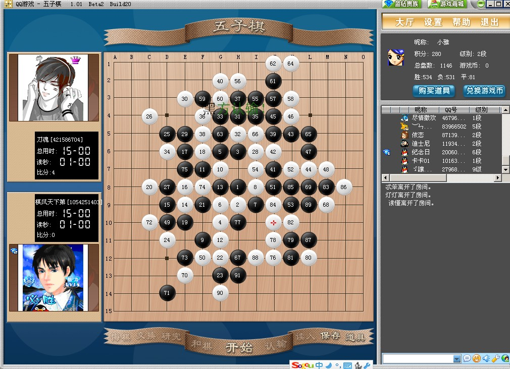#410 Re:刀魂对局收集 作者：刀魂 发表时间：2009-8-9 19:33:29
=======上图对应的爱五子棋谱代码如下，以便你拆解：========
h8h7j6i7k8
======================================================
疏星 败5
［ 茗弈宽容 于 2009-8-23 16:10:06 时花20金币送鲜花一朵］
#411 Re:刀魂对局收集 作者：刀魂 发表时间：2009-8-23 15:30:35
=======上图对应的爱五子棋谱代码如下，以便你拆解：========
h8h7k7k8
======================================================
这个4 很有意思
#412 Re:刀魂对局收集 作者：茗弈宽容 发表时间：2009-8-23 16:18:59
凡事贵在坚持，这点刀魂做得很不错。
#413 Re:Re:刀魂对局收集 作者：刀魂 发表时间：2009-8-24 14:42:49
谢谢。［ 茗弈小刀 于 2009-8-24 16:47:47 时花20金币送鲜花一朵］加油弟弟！只要你踏踏实实的做，大家都能看到的，也会接纳你和支持你！
#414 Re:刀魂对局收集 作者：刀魂 发表时间：2009-8-24 22:04:01
谢谢 小刀 小师姐。。。#415 Re:刀魂对局收集 作者：刀魂 发表时间：2009-8-25 14:00:56
=======上图对应的爱五子棋谱代码如下，以便你拆解：========
d4f6
======================================================
其实这种开局也很有意思的。。。
#416 Re:刀魂对局收集 作者：刀魂 发表时间：2009-8-27 10:15:51
=======上图对应的爱五子棋谱代码如下，以便你拆解：========
h8h7k7i7f7f9
======================================================
这个白6，很有意思。。。
#417 Re:刀魂对局收集 作者：刀魂 发表时间：2009-8-28 8:35:39
=======上图对应的爱五子棋谱代码如下，以便你拆解：========
h8h7k7i9
======================================================
可战。。。
#418 Re:刀魂对局收集 作者：刀魂 发表时间：2009-8-29 13:04:51
=======上图对应的爱五子棋谱代码如下，以便你拆解：========
h8h7j10g9
======================================================
可战
#419 Re:刀魂对局收集 作者：wrwak 发表时间：2009-8-29 17:14:04
刀魂你还没有消失？ 还搞了2个“可战”来骗人啊
#420 Re:Re:刀魂对局收集 作者：wd1988 发表时间：2009-8-29 17:51:31
那个10怎么是这么杀的。。。复杂一点点了
=======上图对应的爱五子棋谱代码如下，以便你拆解：========
h8h9h6i10i6i9g9g8j11j6f8
======================================================
这个11不是好点？
#421 Re:刀魂对局收集 作者：刀魂 发表时间：2009-8-30 7:20:23
=======上图对应的爱五子棋谱代码如下，以便你拆解：========
h8h7k7g6
======================================================
白4 可战
#422 Re:刀魂对局收集 作者：刀魂 发表时间：2009-8-31 20:30:38
今天被切了，呵呵
=======上图对应的爱五子棋谱代码如下，以便你拆解：========
h8h9k9g9j10i9j9j8k7i11k10k8j12j11i10l10g10h10h11f9e9h7f8g7l11m12g8e8f7e4f5d5c6e6
======================================================
31 没问题，后面几手没有控制好，应该和棋的，呵呵
#423 Re:刀魂对局收集 作者：刀魂 发表时间：2009-9-1 13:49:58
=======上图对应的爱五子棋谱代码如下，以便你拆解：========
h8i9i11h7
======================================================
可战。。。
#424 Re:刀魂对局收集 作者：刀魂 发表时间：2009-9-1 16:57:29
=======上图对应的爱五子棋谱代码如下，以便你拆解：========
h8h7k9g8
======================================================
有意思。。。
#425 Re:刀魂对局收集 作者：越狱行辕 发表时间：2009-9-1 19:01:48
 替刀魂大师刷贴直追威望帖
替刀魂大师刷贴直追威望帖 =======上图对应的爱五子棋谱代码如下，以便你拆解：========
h8h9i9g7
======================================================
发个带结论的 貌似花月这个四可能也许败了，
#426 Re:刀魂对局收集 作者：王志伟123 发表时间：2009-9-1 21:02:14
顶下刀魂大师！#427 Re:刀魂对局收集 作者：刀魂 发表时间：2009-9-1 21:37:02
=======上图对应的爱五子棋谱代码如下，以便你拆解：========
h8h7i11g8
======================================================
#428 Re:刀魂对局收集 作者：刀魂 发表时间：2009-9-2 9:05:53
=======上图对应的爱五子棋谱代码如下，以便你拆解：========
h8h7k7g7f7
======================================================
这个5可战
#429 Re:刀魂对局收集 作者：刀魂 发表时间：2009-9-3 17:34:30
=======上图对应的爱五子棋谱代码如下，以便你拆解：========
h8g7h11h9
======================================================
可战
#430 Re:刀魂对局收集 作者：lfc 发表时间：2009-9-3 18:16:28
=======上图对应的爱五子棋谱代码如下，以便你拆解：========
h8
======================================================这个也可战
#431 Re:Re:刀魂对局收集 作者：刀魂 发表时间：2009-9-4 8:10:51
引用：
原文由 lfc 发表于 2009-9-3 18:16:28 :
=======上图对应的爱五子棋谱代码如下，以便你拆解：========
h8
======================================================这个也可战
=======上图对应的爱五子棋谱代码如下，以便你拆解：========
h8g7h5i6
======================================================可战
#432 Re:刀魂对局收集 作者：刀魂 发表时间：2009-9-5 12:23:14
昨天下了局 残月刀觉得比较精彩：
=======上图对应的爱五子棋谱代码如下，以便你拆解：========
h8h7k7
======================================================
#433 Re:刀魂对局收集 作者：刀魂 发表时间：2009-9-6 10:07:37
=======上图对应的爱五子棋谱代码如下，以便你拆解：========
h8i9h5g9
======================================================
bai bi sheng ??? shui shuo de
#434 Re:Re:刀魂对局收集 作者：陨落之城 发表时间：2009-9-6 14:04:51
引用：
原文由 刀魂 发表于 2009-9-3 17:34:30 :
=======上图对应的爱五子棋谱代码如下，以便你拆解：========
h8g7h11h9
======================================================可战
这个4我作过地毯谱
#435 Re:Re:Re:刀魂对局收集 作者：刀魂 发表时间：2009-9-6 20:34:24
引用：
原文由 陨落之城 发表于 2009-9-6 14:04:51 :引用：
原文由 刀魂 发表于 2009-9-3 17:34:30 :
=======上图对应的爱五子棋谱代码如下，以便你拆解：========
h8g7h11h9
======================================================可战
这个4我作过地毯谱
做过，都不发谱？？？
#436 Re:Re:Re:Re:刀魂对局收集 作者：陨落之城 发表时间：2009-9-7 11:35:06
引用：
原文由 刀魂 发表于 2009-9-6 20:34:24 :引用：
原文由 陨落之城 发表于 2009-9-6 14:04:51 :引用：
原文由 刀魂 发表于 2009-9-3 17:34:30 :
=======上图对应的爱五子棋谱代码如下，以便你拆解：========
h8g7h11h9
======================================================可战
这个4我作过地毯谱
做过，都不发谱？？？
发过！自己找去~！！
#437 Re:刀魂对局收集 作者：刀魂 发表时间：2009-9-8 8:45:49
=======上图对应的爱五子棋谱代码如下，以便你拆解：========
h8i9h5i10
======================================================
这个4 有意思。。。可战
#438 Re:刀魂大师对局收集 作者：刀魂 发表时间：2009-9-9 10:06:06
=======上图对应的爱五子棋谱代码如下，以便你拆解：========
h8h7k7g6
======================================================
可战
#439 Re:刀魂大师对局收集 作者：刀魂 发表时间：2009-9-11 11:37:49
=======上图对应的爱五子棋谱代码如下，以便你拆解：========
h8h7k7j9
======================================================
#440 Re:刀魂大师对局收集 作者：刀魂 发表时间：2009-9-12 8:48:34
=======上图对应的爱五子棋谱代码如下，以便你拆解：========
h8g7i5
======================================================
最强4 地毯？？？
#441 Re:Re:刀魂对局收集 作者：歇菜了 发表时间：2009-9-14 0:05:03
引用：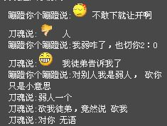
原文由 刀魂 发表于 2009-8-31 20:30:38 :今天被切了，呵呵
=======上图对应的爱五子棋谱代码如下，以便你拆解：========
h8h9k9g9j10i9j9j8k7i11k10k8j12j11i10l10g10h10h11f9e9h7f8g7l11m12g8e8f7e4f5d5c6e6
======================================================31 没问题，后面几手没有控制好，应该和棋的，呵呵
这个谱有问题，我34不是下的这，不过切你2：0是没错了
那天用小马甲下棋，刀魂大师非要在旁边指点我，我就说让他上来下，结果我居然人品爆发侥幸赢了刀魂大师，过了几天再找刀魂大师下怎么也不肯下，然后还一直叫我弱人，说我砍了2：0的是他徒弟，其实我刚才进棋室叫你老人家只是想叫你把上面这个你输的贴子删了，你非要T我干嘛呀
我现在终于知道为什么是“不再复出，只教徒弟了”，原来师傅也是你，徒弟也是你
可敬的刀魂大师，你一人扮演两人，太辛苦了
#442 Re:刀魂大师对局收集 作者：流逝 发表时间：2009-9-14 0:07:40
貌似刀魂大师可以同时扮演好几个人，这才扮演两个角色对他来说还不是小儿科嘛。#443 Re:刀魂大师对局收集 作者：歇菜了 发表时间：2009-9-14 0:09:44
=======上图对应的爱五子棋谱代码如下，以便你拆解：========
h8h9k9g9j10i9j9j8k10
======================================================
刀魂大师有空顺便在拿终结者扫扫这个看自己为什么会输吧
#444 Re:Re:Re:刀魂对局收集 作者：刀魂 发表时间：2009-9-14 0:10:09
引用：
原文由 歇菜了 发表于 2009-9-14 0:05:03 :引用：
原文由 刀魂 发表于 2009-8-31 20:30:38 :今天被切了，呵呵
=======上图对应的爱五子棋谱代码如下，以便你拆解：========
h8h9k9g9j10i9j9j8k7i11k10k8j12j11i10l10g10h10h11f9e9h7f8g7l11m12g8e8f7e4f5d5c6e6
======================================================31 没问题，后面几手没有控制好，应该和棋的，呵呵
这个谱有问题，我34不是下的这，不过切你2：0是没错了
那天用小马甲下棋，刀魂大师非要在旁边指点我，我就说让他上来下，结果我居然人品爆发侥幸赢了刀魂大师，过了几天再找刀魂大师下怎么也不肯下，然后还一直叫我弱人，说我砍了2：0的是他徒弟，其实我刚才进棋室叫你老人家只是想叫你把上面这个你输的贴子删了，你非要T我干嘛呀
我现在终于知道为什么是“不再复出，只教徒弟了”，原来师傅也是你，徒弟也是你
可敬的刀魂大师，你一人扮演两人，太辛苦了
我郑重申明 你写的 刀魂 两个字 绝不是我本人（估计是冒充我的人吧，下次你看清楚了哈；），如果你对我有什么想法
的话，请直接联系我手机。
希望你以后对自己的言语负责任点，你确定那个刀魂确实是我之后，再发上来，知道不？不要怀疑这个，怀疑那个的，下棋只是娱乐罢了，更重要的是享
受，而不是胜负。心情最重要。呵呵，希望你好好想一想。。。。。。
#445 Re:刀魂大师对局收集 作者：歇菜了 发表时间：2009-9-14 0:11:57
原来刀魂大师也有人冒充啊，真神奇，不知道前面那个发“今天被切了呵呵”的人是不是你老人家啊
#446 Re:刀魂大师对局收集 作者：歇菜了 发表时间：2009-9-14 0:13:33
那可能是我弄错了，刀魂大师怎么可能是那个脑can呢，那个脑can估计脑袋被门挤了，跑来冒充刀魂大师，刀魂大师我说的对不对啊
#447 Re:刀魂大师对局收集 作者：歇菜了 发表时间：2009-9-14 0:25:41
看来这个冒充刀魂大师的人挺辛苦的，就和某些想谋杀的一样，谋划了10年才为了杀一个人，他是把自己局数刷到3W多盘，胜率，秀什么的全都和刀魂大师一样，就是为了造谣说刀魂大师败了
#448 Re:Re:刀魂大师对局收集 作者：刀魂 发表时间：2009-9-14 0:33:13
引用：
原文由 歇菜了 发表于 2009-9-14 0:25:41 :
nothing is impossible
#449 Re:刀魂大师对局收集 作者：只为你而飞 发表时间：2009-9-14 1:06:13
刀魂，你太X了
#450 Re:刀魂大师对局收集 作者：王志伟123 发表时间：2009-9-14 8:37:40
现在对刀魂大师又有了新的认识，只有我们想不到的，没有刀魂大师做不到的，哈哈！#451 Re:刀魂大师对局收集 作者：lfc 发表时间：2009-9-14 8:50:58
刀魂的娱乐性是有目共睹的，请不要奇怪。刀魂大师的手机号在哪里？不知道？我一直这么认为刀魂不进娱乐圈真是可惜了！每当看到刀魂的这个专栏，我就很期待，期待他给大家带来笑柄！真正的大师带来的是棋饼，刀魂的笑柄一样让我期待！#452 Re:刀魂大师对局收集 作者：刀魂 发表时间：2009-9-14 9:34:03
#453 Re:刀魂大师对局收集 作者：茗弈宽容 发表时间：2009-9-14 11:11:42
白发渔憔江渚上，惯看秋月春风，一壶浊酒喜相逢。
牐牴沤穸嗌偈拢都付笑谈中
#454 Re:Re:刀魂大师对局收集 作者：刀魂 发表时间：2009-9-14 13:01:27
引用：
原文由 茗弈宽容 发表于 2009-9-14 11:11:42 :白发渔憔江渚上，惯看秋月春风，一壶浊酒喜相逢。
牐牴沤穸嗌偈拢都付笑谈中你整 歌词干吗？？？
#455 Re:刀魂大师对局收集 作者：老黄 发表时间：2009-9-14 21:15:34
南有宋祖德，北有钝刀魂。
#456 Re:刀魂大师对局收集 作者：家族粉丝 发表时间：2009-9-15 0:37:39
南祖德，北刀魂。#457 Re:刀魂大师对局珍藏集 作者：刀魂 发表时间：2009-9-15 10:39:21
#458 Re:刀魂大师对局珍藏集 作者：刀魂 发表时间：2009-9-16 12:01:41
#459 Re:刀魂大师对局珍藏集 作者：刀魂 发表时间：2009-9-17 18:47:18
=======上图对应的爱五子棋谱代码如下，以便你拆解：========
h8h7k7g7f7g6
======================================================
重新认识一下 这个6
#460 Re:刀魂大师对局珍藏集 作者：刀魂 发表时间：2009-9-20 15:56:34
=======上图对应的爱五子棋谱代码如下，以便你拆解：========
h8h7h10g6g10g7i7i8f5g9f9
======================================================
#461 Re:刀魂大师对局珍藏集 作者：刀魂 发表时间：2009-9-21 8:44:14
#462 Re:刀魂大师对局珍藏集 作者：刀魂 发表时间：2009-9-23 12:09:40
=======上图对应的爱五子棋谱代码如下，以便你拆解：========
h8h7k7j9i6
======================================================
#463 Re:刀魂大师对局珍藏集 作者：刀魂 发表时间：2009-9-24 11:11:50
=======上图对应的爱五子棋谱代码如下，以便你拆解：========
h8h9k9k8
======================================================
这个白4 韧劲十足。。。黑棋非常痛苦。
#464 Re:刀魂大师对局珍藏集 作者：刀魂 发表时间：2009-10-7 12:11:45
其实 大残月 很有的一下的，黑白均有机会，不过下到现在，终于得出大概的结论，有一些白4的2打点，是
和棋的，1打有一些4是黑大优。大部分白4 1打必败。。。呵呵。。。最近一直下大残月，瑞星，疏星，斜
月，好久没下了。。。今天晚上来下三大平衡吧，呵呵。
#465 Re:刀魂大师对局珍藏集 作者：刀魂 发表时间：2009-10-9 13:30:21
=======上图对应的爱五子棋谱代码如下，以便你拆解：========
h8h7g7g8h4
======================================================
试一试这个 花 黑5，
#466 Re:刀魂大师对局珍藏集 作者：刀魂 发表时间：2009-10-10 8:39:15
，没人发对局。。。
#467 Re:刀魂大师对局珍藏集 作者：刀魂 发表时间：2009-10-20 9:24:22
=======上图对应的爱五子棋谱代码如下，以便你拆解：========
h8h9k9g8j10g9i11h12g10j8
======================================================
这个10 有意思。。。
#468 Re:刀魂大师对局珍藏集 作者：刀魂 发表时间：2009-10-25 21:29:10
=======上图对应的爱五子棋谱代码如下，以便你拆解：========
h8h7k7g8g7
======================================================
黑5，黑白大有战头
#469 Re:刀魂大师对局珍藏集 作者：刀魂 发表时间：2009-10-28 9:46:23
=======上图对应的爱五子棋谱代码如下，以便你拆解：========
h8i9h5g9
======================================================
请重新定位 2打
#470 Re:刀魂大师对局珍藏集 作者：裁决殿雪月 发表时间：2009-10-28 13:56:44
——————————————————————————————~~！#471 Re:Re:刀魂大师对局珍藏集 作者：刀魂 发表时间：2009-10-28 17:22:11
引用：
原文由 裁决殿雪月 发表于 2009-10-28 13:56:44 :
——————————————————————————————~~！这是啥子意思？？？
#472 Re:刀魂大师对局珍藏集 作者：lfzxdh 发表时间：2009-10-28 18:42:52
前面发展的不错，后面越来越不像样咯。。。
#473 Re:Re:刀魂大师对局珍藏集 作者：刀魂 发表时间：2009-10-29 8:46:07
引用：
原文由 lfzxdh 发表于 2009-10-28 18:42:52 :前面发展的不错，后面越来越不像样咯。。。
呵呵，被你发现了，其实这个帖前面，有很多对局，很有代表性的
#474 Re:刀魂大师对局珍藏集 作者：轻雨飞扬 发表时间：2009-11-4 11:17:32
刀魂，你的刀谱有点不全，有的已有结论，可是你却还说可战！仅此提醒！
你的人品不错，并不像论坛某些人说的那样，我赞赏你发谱的执着，不管谱对与否，那是个人判断，总比一些人什么都不愿发要高尚得多！初来论坛，有点斗胆直言了，有得罪人的地方，万望谅解！
#475 Re:Re:刀魂大师对局珍藏集 作者：刀魂 发表时间：2009-11-4 11:39:59
引用：
原文由 轻雨飞扬 发表于 2009-11-4 11:17:32 :刀魂，你的刀谱有点不全，有的已有结论，可是你却还说可战！仅此提醒！
你的人品不错，并不像论坛某些人说的那样，我赞赏你发谱的执着，不管谱对与否，那是个人判断，总比一些人什么都不愿发要高尚得多！初来论坛，有点斗胆直言了，有得罪人的地方，万望谅解！
#476 Re:刀魂大师对局珍藏集 作者：刀魂 发表时间：2009-11-11 10:04:28
=======上图对应的爱五子棋谱代码如下，以便你拆解：========
h8h7k7j9j6a1i8
======================================================
#477 Re:刀魂大师对局珍藏集 作者：wd1988 发表时间：2009-11-11 17:38:39
=======上图对应的爱五子棋谱代码如下，以便你拆解：========
h8h9i9
======================================================
可战
#478 Re:刀魂大师对局珍藏集 作者：wd1988 发表时间：2009-11-11 17:38:57
=======上图对应的爱五子棋谱代码如下，以便你拆解：========
h8i9i7
======================================================
可战
#479 Re:刀魂大师对局珍藏集 作者：wd1988 发表时间：2009-11-11 17:39:14
=======上图对应的爱五子棋谱代码如下，以便你拆解：========
h8h9i6
======================================================
可战
#480 Re:刀魂大师对局珍藏集 作者：wd1988 发表时间：2009-11-11 17:40:03
=======上图对应的爱五子棋谱代码如下，以便你拆解：========
h8h9h7h6
======================================================
可战
以上局面都可战，不信可以去问问吴大师、顾大师
#481 Re:刀魂大师对局珍藏集 作者：刀魂 发表时间：2009-11-12 8:41:04
问我就可以了！ 确实可战
#482 Re:刀魂大师对局珍藏集 作者：刀魂 发表时间：2009-11-19 17:27:40
=======上图对应的爱五子棋谱代码如下，以便你拆解：========
h8h7k7g8i5j6g7
======================================================
=======上图对应的爱五子棋谱代码如下，以便你拆解：========
h8h7k7g8i5j6i6
======================================================
第二个７比较猛
#483 Re:刀魂大师对局珍藏集 作者：夏琦 发表时间：2009-11-22 23:48:45
这个帖子看了我将近一晚上，先是从前往后看，后来从后往前看，结果一看时间，都快12点了，还没看完呢，估计要断网了，咱得对的起咱的时间是不，得顶哈，明天拿打谱器出来看看，有没有传说中的好谱，今天就先看到这，明天继续~#484 Re:刀魂大师对局珍藏集 作者：刀魂 发表时间：2009-11-24 9:37:34
=======上图对应的爱五子棋谱代码如下，以便你拆解：========
h8h7k7k8
======================================================
请说出何为 1、2、3打点
#485 Re:刀魂大师对局珍藏集 作者：刀魂 发表时间：2009-12-2 18:59:12
=======上图对应的爱五子棋谱代码如下，以便你拆解：========
h8h9k9g8i10
======================================================
此5 败！！！
=======上图对应的爱五子棋谱代码如下，以便你拆解：========
h8h9k9i8j7g8j10
======================================================
=======上图对应的爱五子棋谱代码如下，以便你拆解：========
h8h9k9i8j7g8i10
======================================================
第二个7更好一点！！！
#486 Re:刀魂大师对局珍藏集 作者：许相公 发表时间：2009-12-3 12:40:44
=======上图对应的爱五子棋谱代码如下，以便你拆解：========
h8i5j5j6k7h6k5k6i6j4g7i9h7g8j7i7h5k8g4f3g5h4g3g6g2g1e5f6f5d5f4h2e6d7h3i2i4f1e4e3e8e7d8i11i10k9j10j9h9l9m9k10h10h11g10f10j11k12k11l11i8f11l10j12n8o7l12g11e11f12f13f9f8i14j13g12h13i13h12i12i15e12b8c8d10c9c11e9d9d11m7l7m6m8l6o9m5n4m4m3n5l5l3
======================================================
#487 Re:刀魂大师对局珍藏集 作者：小帮帮 发表时间：2009-12-22 18:08:11
这个帖子，创意不错，只是由刀魂来掌舵，有点遗憾，刀魂的对棋的理解能力和欣赏水平有待加强。
这里倒变成了真贾大师们互相挖苦与讽刺的场所了，精华图片和棋谱太少了，真是太可惜了。
#488 Re:刀魂大师对局珍藏集 作者：苯酚 发表时间：2009-12-22 18:30:51
LS所言差矣啊，刀魂大师的言语就是精华中的精华啊，怎能说精华太少呢？
#489 Re:刀魂大师对局珍藏集 作者：刀魂 发表时间：2009-12-30 16:27:26
最近下棋比较少，稍微整理了一下最近下棋的棋谱：
#490 Re:刀魂大师对局珍藏集 作者：刀魂 发表时间：2009-12-31 11:50:59
，弱弱的问句：木马会侵蚀棋谱吗？昨天我所有的棋谱都不见了！！！如何找棋谱？？？
#491 Re:刀魂大师对局珍藏集 作者：刀魂 发表时间：2010-1-11 18:36:00
=======上图对应的爱五子棋谱代码如下，以便你拆解：========
h8h7k7j8j9k9i7j6h11g9g11
======================================================
#492 Re:刀魂大师对局珍藏集 作者：刀魂 发表时间：2010-1-12 15:04:04
=======上图对应的爱五子棋谱代码如下，以便你拆解：========
h8i9h5h9g9b1j9
======================================================
=======上图对应的爱五子棋谱代码如下，以便你拆解：========
h8i9h5h9g9a1j9
======================================================
=======上图对应的爱五子棋谱代码如下，以便你拆解：========
h8i9h5g9f9a1i6
======================================================
=======上图对应的爱五子棋谱代码如下，以便你拆解：========
h8i9h5g9h9a1f9
======================================================
明星刀打点参照图
#493 Re:刀魂大师对局珍藏集 作者：刀魂 发表时间：2010-2-16 15:13:00
无聊发个 疏星小研究谱：
希望给大家带来帮助！！！
#494 Re:刀魂大师对局珍藏集 作者：刀魂 发表时间：2010-2-17 19:39:50
最近流行疏星白10的下法：（花了点时间做了个小研究，不足之处多多指正。附：图和棋谱）
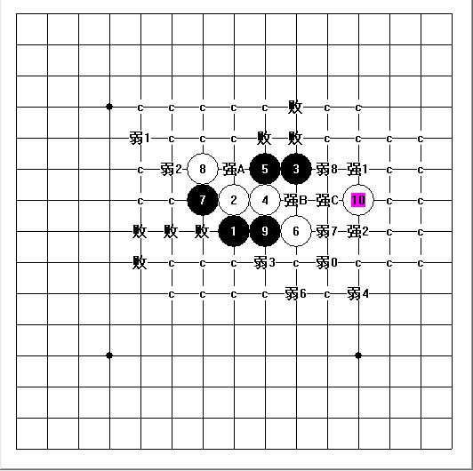
#495 Re:刀魂大师对局珍藏集 作者：≈★诚心★≈ 发表时间：2010-3-1 12:41:49
=======上图对应的爱五子棋谱代码如下，以便你拆解：========
h8h9j10i9j9j8h10g10i8k10g6g9f9g8g7f7e6h13
======================================================
黑石就是下在这里的 刀魂你用的什么版本的
#496 Re:刀魂大师对局珍藏集 作者：刀魂 发表时间：2010-3-9 18:01:27
请教一个疏星 败点？？？（能否杀干净）如图：
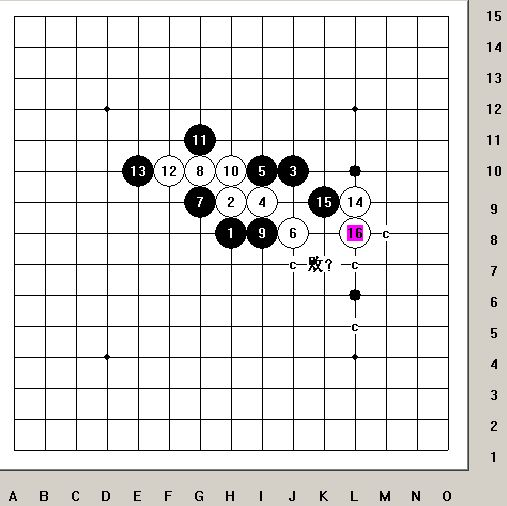
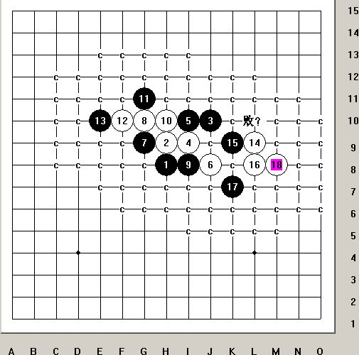
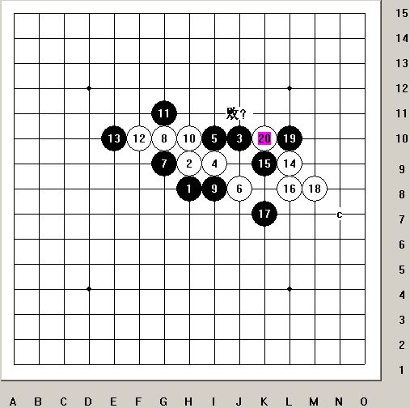
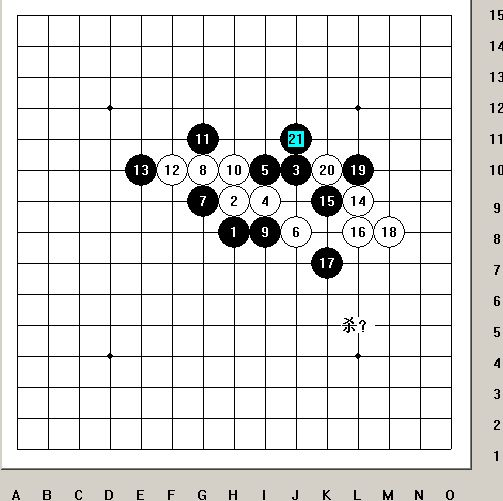
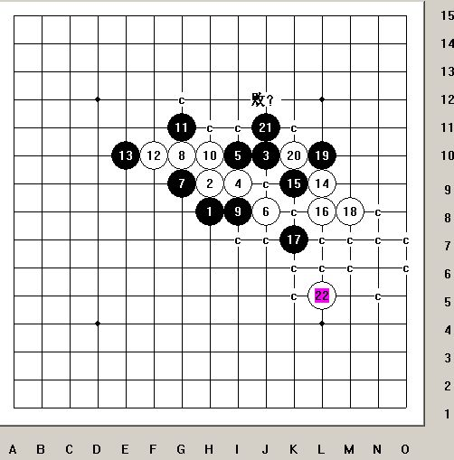
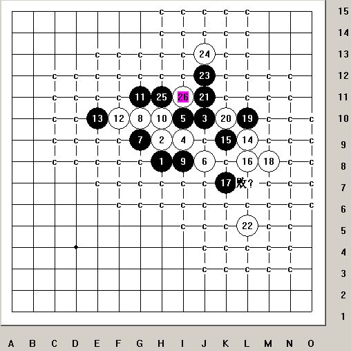
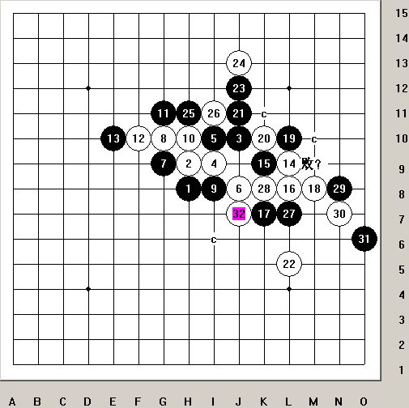
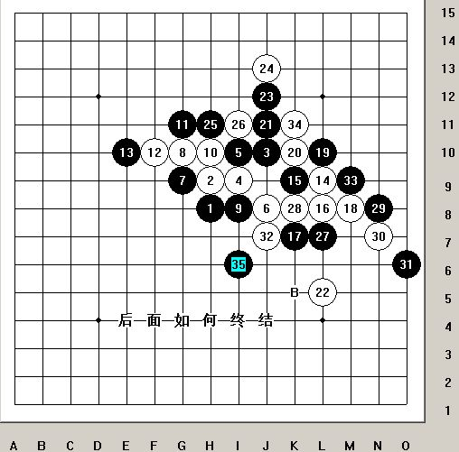
#497 Re:刀魂大师对局珍藏集 作者：刀魂 发表时间：2010-3-14 17:55:44
最近下的几局疏星谱，希望对连珠爱好者有所帮助：
#498 Re:刀魂大师对局珍藏集 作者：如火流年 发表时间：2010-3-14 22:37:29
想出名想疯了么。。。#499 Re:刀魂大师对局珍藏集 作者：刀魂 发表时间：2010-3-16 13:20:09
#500 Re:刀魂大师对局珍藏集 作者：岳麓小棋后 发表时间：2010-3-16 13:44:14
不听刀大师教诲好多年
#501 Re:刀魂大师对局珍藏集 作者：刀魂 发表时间：2010-6-30 8:49:54
=======上图对应的爱五子棋谱代码如下，以便你拆解：========
h8h7h10i6i10i7g7g8j5i9i8k9h6j7l9g4h5i4j4i5i3h4k7e6
======================================================
呵呵，这路变化，算是个 小研究吧。白24败，黑 V
［此帖子已被 刀魂 在 2010-6-30 8:50:14 编辑过］
#502 Re:刀魂大师对局珍藏集 作者：wrwak 发表时间：2010-6-30 11:59:03
刀魂小制作多少钱一斤#503 Re:刀魂大师对局珍藏集 作者：足球赛 发表时间：2010-7-13 0:24:16
刀魂大师 no.50的帖子下到23手时,你速败,
h8h7f6g7e7g5f8g9f7g8g6f9i6h6e8d9h5i4f4f5e9e10d11g10g11f10
#504 Re:刀魂大师对局珍藏集 作者：家族粉丝 发表时间：2011-2-1 19:32:15
#505 Re:刀魂大师对局珍藏集 作者：潇洒 发表时间：2011-2-23 2:15:12
支持刀魂继续发高手对局谱
#506 Re:刀魂大师对局珍藏集 作者：刀魂 发表时间：2011-5-14 22:52:49
小考几个疏星 败点：
第一
=======上图对应的爱五子棋谱代码如下，以便你拆解：========
h8h9j10i9j9k9
======================================================
第二
=======上图对应的爱五子棋谱代码如下，以便你拆解：========
h8h9j10i9j9j8i7
======================================================
第三
=======上图对应的爱五子棋谱代码如下，以便你拆解：========
h8h9j10i9j9j8i10
======================================================
第四
=======上图对应的爱五子棋谱代码如下，以便你拆解：========
h8h9j10i9h10
======================================================
［ gerbo 于 2011-5-15 4:32:36 时花20金币送鲜花一朵］
#507 Re:刀魂大师对局珍藏集 作者：潇洒 发表时间：2011-5-14 23:15:26
=======上图对应的爱五子棋谱代码如下，以便你拆解：========
h8h9j10i9j9j8i10
======================================================
刀魂大师这个7白怎么杀？
#508 Re:刀魂大师对局珍藏集 作者：极地剑客 发表时间：2011-5-16 7:52:40
才发现刀魂神这么有毅力,这个贴子超级长了.强!#509 Re:刀魂大师对局珍藏集 作者：刀魂 发表时间：2011-5-21 21:58:43
=======上图对应的爱五子棋谱代码如下，以便你拆解：========
h8h9j10i9j9j8h10g10i7
======================================================
小考：此9败
=======上图对应的爱五子棋谱代码如下，以便你拆解：========
h8h9j10i9j9j8h10g10i7g9
======================================================
提示，最强10
#510 Re:刀魂大师对局珍藏集 作者：冷面孤煞 发表时间：2011-5-31 21:40:42
=======上图对应的爱五子棋谱代码如下，以便你拆解：========
h8h9j10i9j9j8h10g10i7g9f9f11e12g8g7f7e6j11i10k10
======================================================
=======上图对应的爱五子棋谱代码如下，以便你拆解：========
h8h9j10i9j9j8h10g10i7g9f9f11e12g8g7f7i10g12g11d9
======================================================
#511 Re:刀魂大师对局珍藏集 作者：潇洒 发表时间：2011-6-15 10:23:16
刀魂大师不来,没人发高手对局谱了..